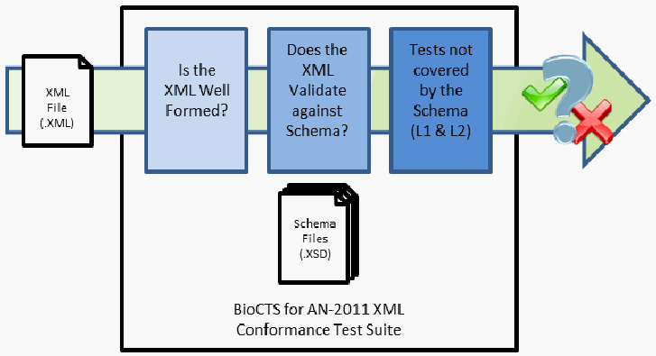
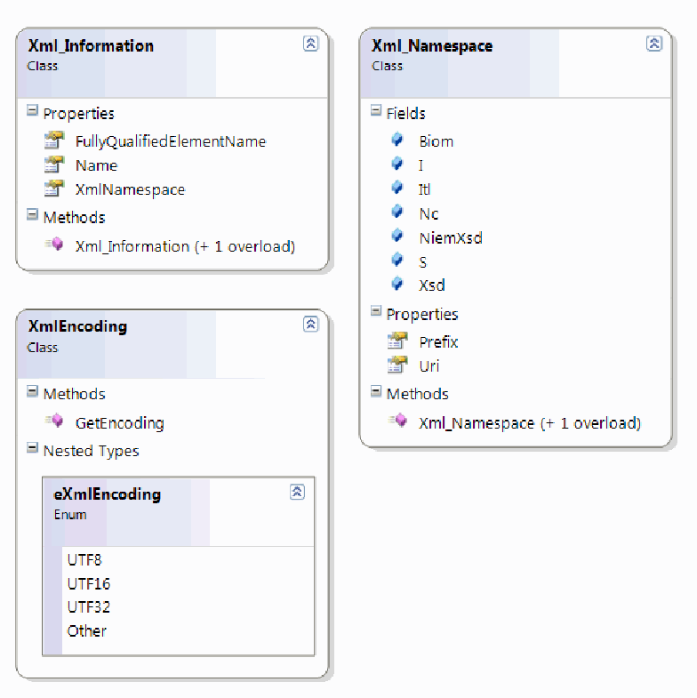
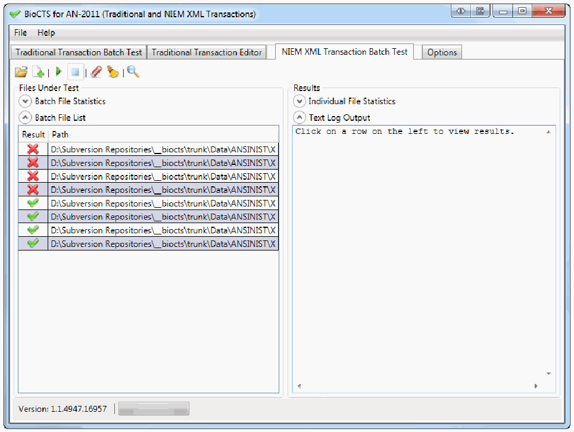
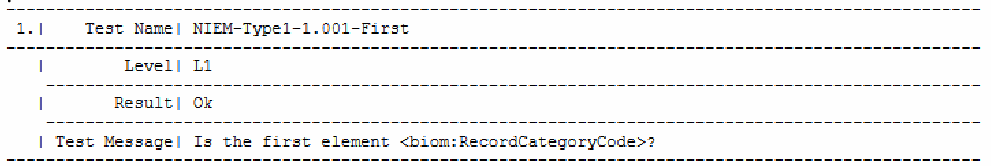
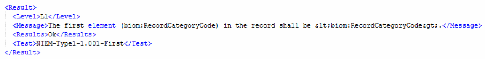

NIST IR 7957 日本語訳
英語タイトル : Conformance Test Architecture and Test Suite for ANSI/NIST-ITL 1-2011 NIEM XML Encoded Transactions日本語タイトル : ANSI/NIST-ITL 1-2011 NIEM XML 符号化トランザクションのための適合性テストアーキテクチャとテストスイート
公開日 : 2013-09-18
原文URL : https://csrc.nist.gov/pubs/ir/7957/final
翻訳編集 : 自動生成（有志による非公式の日本語訳）, 原文取得日 : 2026-10-31, 訳文 : 328 / 332 ブロック
[要約] NIST IR 7957 は、ANSI/NIST-ITL 1-2011（AN-2011）の NIEM XML 符号化トランザクションの実装を試験するために NIST/ITL のコンピューターセキュリティ部門が開発した、適合性テストアーキテクチャ（CTA）とテストスイート（CTS）を説明する報告書です。XML スキーマによる検証だけでは、トランザクション内の 2 つの要素または構造の間の関係といった実装の内部的な整合性を試験できないため、このテストツールはスキーマ検証と、XML ファイル内のデータに対する適合性試験を組み合わせています。使用する XML データ構造と実装するクラスを含むソフトウェアの設計、試験のフェーズと試験結果の形式、ユーザーインターフェースと主要なユーザビリティ機能を扱います。試験の実施に必要だった修正済みスキーマの詳細と、開発中の ANSI/NIST-ITL 標準の新バージョンのサポートを含む今後の開発ステップも示されています。
［組織・プログラムのロゴ。ロゴのため、この非公式サイトには掲載していません。原本 PDF を参照してください。］
NISTIR 7957
NISTIR 7957
Conformance Test Architecture and Test Suite for ANSI/NIST-ITL 1-2011 NIEM XML Encoded Transactions
ANSI/NIST-ITL 1-2011 NIEM XML 符号化トランザクションのための適合性テストアーキテクチャとテストスイート
Fernando L. Podio
Dylan Yaga
Christofer J. McGinnis
Fernando L. Podio
Dylan Yaga
Christofer J. McGinnis
http://dx.doi.org/10.6028/NIST.IR.7957
http://dx.doi.org/10.6028/NIST.IR.7957
NISTIR 7957
NISTIR 7957
［組織・プログラムのロゴ。ロゴのため、この非公式サイトには掲載していません。原本 PDF を参照してください。］
Conformance Test Architecture and Test Suite for ANSI/NIST-ITL 1-2011 NIEM XML Encoded Transactions
ANSI/NIST-ITL 1-2011 NIEM XML 符号化トランザクションのための適合性テストアーキテクチャとテストスイート
Fernando L. Podio
Dylan Yaga
Christofer J. McGinnis
Fernando L. Podio
Dylan Yaga
Christofer J. McGinnis
Computer Security Division
Information Technology Laboratory
コンピューターセキュリティ部門
情報技術研究所
http://dx.doi.org/10.6028/NIST.IR.7957
http://dx.doi.org/10.6028/NIST.IR.7957
August 2013
2013 年 8 月
U.S. Department of Commerce
Penny Pritzker, Secretary
米国商務省
Penny Pritzker 長官
National Institute of Standards and Technology
Patrick Gallagher, Under Secretary for Standards and Technology and Director
国立標準技術研究所
Patrick Gallagher、標準・技術担当商務次官兼所長
National Institute of Standards and Technology Interagency Report 7957
38 pages (August 2013)
米国国立標準技術研究所 機関間報告書 7957
38 ページ（2013 年 8 月）
Certain commercial entities, equipment, or materials may be identified in this document in order to describe an experimental procedure or concept adequately. Such identification is not intended to imply recommendation or endorsement by NIST, nor is it intended to imply that the entities, materials, or equipment are necessarily the best available for the purpose.
本書では、実験的な手順や概念を適切に説明するために、特定の商業事業者、機器、または資材を明示する場合があります。そのような明示は、NIST による推奨や支持を意味するものではなく、また、それらの事業者、資材、機器がその目的に利用可能なものの中で必ずしも最良であることを意味するものでもありません。
There may be references in this publication to other publications currently under development by NIST in accordance with its assigned statutory responsibilities. The information in this publication, including concepts and methodologies, may be used by Federal agencies even before the completion of such companion publications. Thus, until each publication is completed, current requirements, guidelines, and procedures, where they exist, remain operative. For planning and transition purposes, Federal agencies may wish to closely follow the development of these new publications by NIST.
本刊行物では、NIST が法令で定められた責務に従って現在策定中の他の刊行物に言及している場合があります。それらの関連刊行物が完成する前であっても、本刊行物の情報（概念や方法論を含む）を連邦機関が利用してもよいです。したがって、各刊行物が完成するまでは、既存の要件、ガイドライン、手順がある場合は、それらが引き続き有効です。計画および移行のため、連邦機関は、NIST によるこれらの新しい刊行物の策定状況を注意深く追うことを検討してもよいです。
Organizations are encouraged to review all draft publications during public comment periods and provide feedback to NIST. All NIST Computer Security Division publications, other than the ones noted above, are available at http://csrc.nist.gov/publications.
組織には、パブリックコメント期間中にすべてのドラフト刊行物をレビューし、NIST にフィードバックを提供することが推奨されています。上記のものを除くすべての NIST コンピューターセキュリティ部門の刊行物は、http://csrc.nist.gov/publications で入手できます。
Feedback Suggested
フィードバックのお願い
Conformance Test Architectures and Test Suites, User Guides, and sample (“pass/fail”) data are available from the following web site: http://www.nist.gov/itl/csd/biometrics/biocta_download.cfm.
適合性テストアーキテクチャとテストスイート、ユーザーガイド、およびサンプル（「合格／不合格」）データは、次の Web サイトで入手できます: http://www.nist.gov/itl/csd/biometrics/biocta_download.cfm。
Feedback on these test tools, the sample data, and documentation is welcome. Please send comments to biocts@nist.gov.
これらのテストツール、サンプルデータ、文書に対するフィードバックを歓迎します。コメントは biocts@nist.gov にお送りください。
Reports on Computer Systems Technology
コンピューターシステム技術に関する報告書
The Information Technology Laboratory (ITL) at the National Institute of Standards and Technology (NIST) promotes the U.S. economy and public welfare by providing technical leadership for the Nation’s measurement and standards infrastructure. ITL develops tests, test methods, reference data, proof of concept implementations, and technical analyses to advance the development and productive use of information technology. ITL’s responsibilities include the development of management, administrative, technical, and physical standards and guidelines for the cost-effective security and privacy of other than national security-related information in Federal information systems
米国国立標準技術研究所（NIST）の情報技術研究所（ITL）は、国の計測・標準インフラストラクチャに対する技術的なリーダーシップを提供することにより、米国の経済と公共の福祉を促進しています。ITL は、情報技術の発展と生産的な利用を推進するため、テスト、テスト方法、参照データ、概念実証の実装、技術的分析を開発しています。ITL の責務には、連邦情報システムにおける国家安全保障に関係しない情報について、費用対効果の高いセキュリティとプライバシーを実現するための、マネジメント、管理、技術、物理面の標準およびガイドラインの策定が含まれます。
Abstract
概要
The latest version of the ANSI/NIST-ITL standard was published in November 2011 (AN-2011). In addition to specifying Record Types in traditional encoding, the standard includes the specification of National Information Exchange Model (NIEM) Extensible Markup Language (XML) encoding and an associated schema. The Computer Security Division of NIST/ITL developed a Conformance Test Architecture (CTA) and Test Suite (CTS) called BioCTS for AN-2011 NIEM XML designed to test implementations of AN-2011 NIEM XML encoded transactions. Validating the XML files to a schema may indicate that the contained data is formatted correctly and individual values are within allowable ranges, assuming that the requirements for that data have been documented in the schema file. However, schemas are not designed to test the internal consistency of implementations (i.e., testing for a relationship between two elements or structures within a transaction). These shortcomings of XML schema files for use in conformance testing necessitate that schemas be used only as a component of a complete testing solution. This complete solution (the test tool) ensures test coverage of requirements through a combination of schema validation and conformance tests of the data in the XML files. This document discusses the test software design including the XML Data Structures used and Classes implemented. It addresses the testing phases and the format of the test results; as well as the user interface and key usability features implemented in this version of the test tool. Details are provided on a modified schema that was required to be used in the tool in order to fully perform tests for all the requirements specified in the AN-2011 standard. Future development steps including support for the new version of the ANSI/NIST-ITL standard under development are also discussed.
ANSI/NIST-ITL 標準の最新版は、2011 年 11 月に公表されました（AN-2011）。この標準は、従来の符号化によるレコードタイプの仕様に加えて、National Information Exchange Model（NIEM）の Extensible Markup Language（XML）符号化と、関連するスキーマの仕様を含んでいます。NIST/ITL のコンピューターセキュリティ部門は、AN-2011 NIEM XML 符号化トランザクションの実装を試験するために設計された、AN-2011 NIEM XML 向けの BioCTS と呼ばれる適合性テストアーキテクチャ（Conformance Test Architecture、CTA）とテストスイート（Test Suite、CTS）を開発しました。XML ファイルをスキーマに対して検証すると、データに対する要件がスキーマファイルに文書化されている場合に限り、含まれるデータが正しく整形され、個々の値が許容範囲内にあることを示せる可能性があります。しかし、スキーマは、実装の内部的な整合性（つまり、トランザクション内の 2 つの要素または構造の間の関係の試験）を試験するようには設計されていません。XML スキーマファイルには、適合性試験に使用する際にこのような欠点があるため、スキーマは、完全な試験ソリューションの構成要素としてのみ使用する必要があります。この完全なソリューション（テストツール）は、スキーマ検証と、XML ファイル内のデータに対する適合性試験の組み合わせにより、要件のテストカバレッジを確保します。本書は、使用する XML データ構造と実装するクラスを含む、テストソフトウェアの設計を論じます。また、試験のフェーズと試験結果の形式、ならびにテストツールのこのバージョンに実装されたユーザーインターフェースと主要なユーザビリティ機能を扱います。AN-2011 標準で規定されたすべての要件について完全に試験を実施するためにツールで使用する必要があった、修正済みスキーマの詳細も示します。開発中の ANSI/NIST-ITL 標準の新バージョンのサポートを含む、今後の開発ステップについても論じます。
Keywords
キーワード
ANSI/NIST-ITL 1-2011, biometrics, conformance testing, conformance test architecture, CTA, CTS, BioCTS, conformance test suite, data interchange formats, encoding, XML NIEM, encoding.
ANSI/NIST-ITL 1-2011、生体認証、適合性試験、適合性テストアーキテクチャ、CTA、CTS、BioCTS、適合性テストスイート、データ交換形式、符号化、XML NIEM、符号化。
Acknowledgements
謝辞
The work discussed in this publication was sponsored, in part, by the Department of Homeland Security/Office of Biometric Identity Management (OBIM).
本刊行物で論じる作業は、国土安全保障省生体認証識別管理局（Office of Biometric Identity Management、OBIM）が一部を後援しました。
Table of Contents
目次
List of Figures and Tables
図表一覧
1 Introduction
1 はじめに
1.1 ANSI/NIST-ITL Standards
1.1 ANSI/NIST-ITL 標準
The American National Standards Institute/National Institute of Standards and Technology-Information Technology Laboratory (ANSI/NIST-ITL) standard Data Format for the Interchange of Fingerprint, Facial & Other Biometric Information is used by law enforcement, intelligence, military, and homeland security organizations throughout the world. The first version of the standard dates to 1986. Over the years, it has been updated and expanded to cover more biometric modalities beyond the original Record Type of fingerprint minutiae. The latest version of this standard was published in 2011. ANSI/NIST-ITL 1-2011 (published as NIST Special Publication 500-290), Data Format for the Interchange of Fingerprint, Facial & Other Biometric Information (AN-2011) supersedes all previous versions and amendments to the standard [1]. AN-2011 specifies two data encoding formats: Traditional format (Tag-based format) and a XML format conformant to the National Information Exchange Model (NIEM) [2]. New modalities (DNA and plantars) were added as new Record Types. The extended feature set was added to Record Type 9; Record Type 10 was extended to include all body part images and to include anthropomorphic image markups. Compact iris image storage formats were introduced. There were substantial metadata upgrades as well, including geographic location, data handling logs, original source and associated reference data. Information assurance capabilities were added as Record Type-98.
American National Standards Institute/National Institute of Standards and Technology-Information Technology Laboratory（ANSI/NIST-ITL）標準 Data Format for the Interchange of Fingerprint, Facial & Other Biometric Information は、世界中の法執行機関、情報機関、軍、国土安全保障の組織で使用されています。この標準の最初の版は 1986 年にさかのぼります。長年にわたり、当初のレコードタイプである指紋の特徴点を超えて、より多くの生体認証モダリティを対象とするように、更新と拡張が行われてきました。この標準の最新版は 2011 年に公表されました。ANSI/NIST-ITL 1-2011（NIST Special Publication 500-290 として公表）、Data Format for the Interchange of Fingerprint, Facial & Other Biometric Information（AN-2011）は、この標準のすべての旧版および修正を置き換えます [1]。AN-2011 は、2 つのデータ符号化形式を規定しています。従来形式（タグベース形式）と、National Information Exchange Model（NIEM）[2] に準拠する XML 形式です。新しいモダリティ（DNA と足底）が、新しいレコードタイプとして追加されました。拡張特徴セットがレコードタイプ 9 に追加され、レコードタイプ 10 は、すべての身体部位の画像と、人体計測的な画像マークアップを含むように拡張されました。コンパクトな虹彩画像の保存形式が導入されました。地理的位置、データ取扱いログ、元のソース、関連する参照データなど、メタデータも大幅に強化されました。情報保証機能は、レコードタイプ 98 として追加されました。
Development of a new version of the standard started in 2013. A new data record type was introduced for transmission of forensic dental data and imagery. An additional new Record Type was specified to enable transmission of imagery that is not a standard photograph (which would be transmitted in a Type-10 record). Examples include radiographs, Computed Tomography (CT) scans, Positron Emission Tomography (PET) scans, sonograms, 3D orthodontic cast models, Digital Imaging and Communication in Medicine (DICOM) records [3], infrared images, and 3D face data. A new Record Type for Forensic and Investigatory Voice Data has also been specified. The new version of the standard (in draft form at the time of this publication) can be found at the ANSI/NIST-ITL Web Page [4].
この標準の新バージョンの策定は、2013 年に始まりました。法歯学データと画像を伝送するための新しいデータレコードタイプが導入されました。さらに、標準的な写真（Type-10 レコードで伝送されるもの）ではない画像の伝送を可能にするため、別の新しいレコードタイプが規定されました。例として、X 線画像、コンピューター断層撮影（CT）スキャン、陽電子放射断層撮影（PET）スキャン、超音波画像、3D 歯科矯正用模型、Digital Imaging and Communication in Medicine（DICOM）レコード [3]、赤外線画像、3D 顔データがあります。法医学・捜査用の音声データのための新しいレコードタイプも規定されています。標準の新バージョン（本刊行物の時点ではドラフト形式）は、ANSI/NIST-ITL の Web ページ [4] で見ることができます。
1.2 Conformance Testing to Biometric Standards
1.2 生体認証標準に対する適合性試験
The existence of biometric standards alone is not enough to demonstrate that products meet the technical requirements specified in the standards. Conformance testing captures the technical description of a specification and measures whether an implementation faithfully implements the specification. Conformance testing provides developers, users, and purchasers with increased levels of confidence in product quality and increases the probability of successful interoperability.
生体認証標準が存在するだけでは、製品が標準に規定された技術要件を満たしていることを示すには不十分です。適合性試験は、仕様の技術的な記述を捉え、実装が仕様を忠実に実装しているかどうかを測定します。適合性試験は、開発者、ユーザー、購入者に対して、製品品質に対する信頼の水準を高め、相互運用性が成功する確率を高めます。
Although no conformance test can be comprehensive enough to test all the different combinations of mandatory requirements of a standard and all possible combinations of conditional and optional characteristics that could be included in a standard, a well-designed conformance test tool that faithfully implements a standard conformance testing methodology could raise the level of confidence on the test results. Therefore, a set of implementations tested with such a tool (and reported to be conformant to the standard), will be more likely to conform to the standard.
標準の必須要件のさまざまな組み合わせすべてと、標準に含まれうる条件付き特性およびオプション特性のあらゆる組み合わせすべてを試験できるほど包括的な適合性試験は存在しませんが、標準の適合性試験方法論を忠実に実装した、よく設計された適合性テストツールは、試験結果に対する信頼の水準を高めることができます。したがって、そのようなツールで試験された（そして標準に適合していると報告された）実装の集合は、標準に適合している可能性がより高くなります。
1.3 NIST/ITL’s Computer Security Division Conformity Assessment Related Efforts
1.3 NIST/ITL コンピューターセキュリティ部門の適合性評価関連の取り組み
The Computer Security Division (CSD) of NIST/ITL supports the development of biometric conformance testing methodology standards and other conformity assessment efforts through active technical participation in the development of biometric standards and associated conformance test architectures and test suites. NIST/ITL CSD develops these test tools to support users who require conformance to selected biometric standards and product developers interested in conforming to biometric standards by using the same testing tools available to users. Testing laboratories can also benefit from the use of these test tools. These efforts support the possible establishment of conformity assessment programs to validate conformance to biometric standards.
NIST/ITL のコンピューターセキュリティ部門（CSD）は、生体認証標準と関連する適合性テストアーキテクチャおよびテストスイートの策定への積極的な技術的参加を通じて、生体認証の適合性試験方法論標準およびその他の適合性評価の取り組みの策定を支援しています。NIST/ITL CSD は、選定された生体認証標準への適合を必要とするユーザーと、ユーザーが利用できるのと同じテストツールを使って生体認証標準に適合することに関心を持つ製品開発者を支援するため、これらのテストツールを開発しています。試験所も、これらのテストツールの使用から利益を得られます。これらの取り組みは、生体認証標準への適合を検証する適合性評価プログラムの設立の可能性を支援します。
Under conformance test software called “BioCTS”, NIST/ITL CSD has developed a number of Conformance Test Architectures (CTAs) and Conformance Test Suites (CTSs) to test implementations of national and international biometric data interchange formats. The biometric conformance testing software includes the test tools designed to test implementations of the following standards:
NIST/ITL CSD は、「BioCTS」と呼ばれる適合性テストソフトウェアのもとで、国内および国際的な生体認証データ交換形式の実装を試験するための、複数の適合性テストアーキテクチャ（CTA）と適合性テストスイート（CTS）を開発しました。この生体認証適合性試験ソフトウェアには、次の標準の実装を試験するように設計されたテストツールが含まれます。
•Previous and current versions of the ANSI/NIST-ITL standards (1-2007 and 1-2011 versions) [4] for the Traditional (tag-based) encoding.
•従来型（タグベース）符号化に対する ANSI/NIST-ITL 標準の旧バージョンと現行バージョン（1-2007 版と 1-2011 版）[4]。
•Biometric data interchange formats specified in binary encoding developed by the International Committee for Information Technology Standards Technical Committee M1- Biometrics (INCITS/M1) [5].
•International Committee for Information Technology Standards Technical Committee M1- Biometrics（INCITS/M1）が策定した、バイナリ符号化で規定される生体認証データ交換形式 [5]。
•Biometric data interchange formats specified in binary encoding developed by ISO/IEC Joint Technical Committee 1 Subcommittee 37 – Biometrics (JTC 1/SC 37) [6].
•ISO/IEC Joint Technical Committee 1 Subcommittee 37 – Biometrics（JTC 1/SC 37）が策定した、バイナリ符号化で規定される生体認証データ交換形式 [6]。
•Selected PIV Profiles1 specified in NIST Special Publication 800-76-2, Biometric Specifications for Personal Identity Verification published in July 2013 [7].
•2013 年 7 月に公表された NIST Special Publication 800-76-2, Biometric Specifications for Personal Identity Verification [7] で規定されている、選定された PIV プロファイル1。
These tools, sample data (including passing data files and failing data files) and associated documentation are available to the public and can be downloaded from the NIST/ITL CSD test tool download web site [8]. Previous work from NIST/ITL CSD, such as NIST/ITL's Biometric Application Programming Interface (BioAPI) Conformance Test Suite and NIST/ITL’s Conformance Test Suite for Patron Format A Data Structures Specified in ANSI INCITS 398-2008, Common Biometric Exchange Formats Framework (CBEFF) are available at [9] and [10] respectively.
これらのツール、サンプルデータ（合格データファイルと不合格データファイルを含む）、および関連文書は一般に公開されており、NIST/ITL CSD のテストツールのダウンロード Web サイト [8] からダウンロードできます。NIST/ITL's Biometric Application Programming Interface (BioAPI) Conformance Test Suite や NIST/ITL’s Conformance Test Suite for Patron Format A Data Structures Specified in ANSI INCITS 398-2008, Common Biometric Exchange Formats Framework (CBEFF) など、NIST/ITL CSD のこれまでの成果は、それぞれ [9] と [10] で入手できます。
The NIST/ITL CSD download web site has the latest test tool releases which include an upgraded version of the CTAs to support the CTSs listed above as well as new CTSs for additional international standards and a CTS to test AN-2011 NIEM XML encoded transaction which will be discussed in the next sections. Plans include migrating the latest ANSI/NIST-ITL test tool to support the 2013 new version and new CTS designed to test XML encoded international data interchange formats.
NIST/ITL CSD のダウンロード Web サイトには、上記の CTS をサポートする CTA の更新版、追加の国際標準に対する新しい CTS、および次の節で論じる AN-2011 NIEM XML 符号化トランザクションを試験する CTS を含む、最新のテストツールのリリースがあります。今後の計画には、最新の ANSI/NIST-ITL テストツールを2013 年の新バージョンに対応させること、および XML 符号化された国際データ交換形式を試験するために設計された新しい CTS が含まれます。
2 BioCTS for AN-2011 NIEM XML - Conformance Test Tool
2 AN-2011 NIEM XML 向け BioCTS - 適合性テストツール
2.1 Structure of AN-2011 XML-Encoded Transactions
2.1 AN-2011 XML 符号化トランザクションの構造
The AN-2011 NIEM-conformant XML encoded transactions are specified within an XML Exchange Package; which uses specifically named XML Elements to represent data structures in a strictly ordered fashion. The <itl:NISTBiometricInformationExchangePackage> XML Element must be the root Element, and its children must be Elements associated with the Record Types defined in the Traditional encoding. All information regarding the complete structure of an Exchange Package can be found in Annex C and Annex G of the AN-2011 standard and the associated XML schema [11] that can be found at the ANSI/NIST-ITL Standard Web page. As discussed in Section 2.4 below, the specified schema does not enforce all of the requirements of the AN-2011 standard and therefore, the test tool relies on a modified schema (“default” schema).
AN-2011 の NIEM 準拠 XML 符号化トランザクションは、XML Exchange Package の中で規定されます。これは、厳密に順序づけられた方法でデータ構造を表すために、特定の名前を持つ XML 要素を使用します。<itl:NISTBiometricInformationExchangePackage> XML 要素は、ルート要素でなければならず、その子は、従来型の符号化で定義されたレコードタイプに関連づけられた要素でなければなりません。Exchange Package の完全な構造に関するすべての情報は、AN-2011 標準の附属書 C と附属書 G、および ANSI/NIST-ITL 標準の Web ページにある関連する XML スキーマ [11] で見ることができます。後述の第 2.4 節で論じるように、規定されたスキーマは AN-2011 標準のすべての要件を強制するわけではないため、テストツールは修正済みスキーマ（「既定」のスキーマ）に依存します。
The AN-2011 standard defines the structure of AN-2011 traditionally encoded Transactions as being comprised of Records, Fields, Subfields, and Information Items. In NIEM-XML encoded Transactions, known as Exchange Packages, named XML Elements represent all data structures defined in the AN-2011 standard. The mapping of these named XML Elements to the structures referenced in the AN-2011 standard is specified in AN-2011 Annex G: Mapping to the NIEM IEPD. The AN-2011 standard defines requirements for both encodings, but references structures using their Traditional encoding identifiers such as Record Types, Field Numbers, and Subfield and Information Item positions. These requirements must be translated to the XML equivalent using the mapping provided in Annex G. Some specific issues, including differences between the two encodings, must be taken into consideration when performing this translation:
AN-2011 標準は、AN-2011 の従来型の符号化トランザクションの構造を、レコード、フィールド、サブフィールド、情報項目から構成されるものと定義しています。Exchange Package と呼ばれる NIEM-XML 符号化トランザクションでは、名前を持つ XML 要素が、AN-2011 標準で定義されたすべてのデータ構造を表します。これらの名前を持つ XML 要素と、AN-2011 標準で参照される構造とのマッピングは、AN-2011 附属書 G: Mapping to the NIEM IEPD で規定されています。AN-2011 標準は、両方の符号化に対する要件を定義していますが、レコードタイプ、フィールド番号、サブフィールドや情報項目の位置など、従来型の符号化の識別子を使って構造を参照しています。これらの要件は、附属書 G で提供されるマッピングを用いて、XML の同等のものに変換しなければなりません。この変換を行う際には、2 つの符号化の違いを含む、いくつかの特定の課題を考慮に入れなければなりません。
•Name Uniqueness: The named XML Elements are not necessarily unique, meaning that one XML Element name may be used to represent one or more structures. As a result of this difference, the name of the XML Element and its relative position to other Elements are important in identifying the appropriate Element within the Exchange Package. For example, querying the Exchange Package for <biom:RecordCategoryCode> will not return a single specific structure, because that Element name represents Field xx.001 in every Record Type.
•名前の一意性: 名前を持つ XML 要素は必ずしも一意ではありません。つまり、1 つの XML 要素名が 1 つ以上の構造を表すために使われることがあります。この違いの結果として、Exchange Package 内で適切な要素を識別するうえで、XML 要素の名前と、他の要素に対するその相対的な位置が重要になります。たとえば、Exchange Package に対して <biom:RecordCategoryCode> を照会しても、特定の 1 つの構造は返されません。その要素名は、すべてのレコードタイプのフィールド xx.001 を表すためです。
•Ordering: While Traditional encoding requires only some structures to be ordered, such as the first two Fields of each record, XML encoding requires strict ordering of Elements.
•順序: 従来型の符号化では、各レコードの最初の 2 つのフィールドなど、一部の構造のみに順序が必要ですが、XML 符号化では要素の厳密な順序が必要です。
•Optional Structures: In Traditional encoding the information separators for optional Information Items must always be present. Optional XML Elements are simply omitted from the Exchange Package when not used.
•オプションの構造: 従来型の符号化では、オプションの情報項目の情報区切り文字が常に存在しなければなりません。オプションの XML 要素は、使用しない場合、Exchange Package から単に省略されます。
•Mapping Cardinality: There is not always a one-to-one relationship between XML Elements and Traditional structures. Some examples of differences include:
•マッピングの多重度: XML 要素と従来型の構造の間に、常に一対一の関係があるわけではありません。違いの例には次のものがあります。
•There is no XML equivalent for the Traditional structure. Such as the case when a field contains subfields in Traditional, but the XML instead uses Elements to represent the subfields directly, without the need for a Field to contain them.
•従来型の構造に相当する XML がありません。たとえば、従来型ではフィールドがサブフィールドを含みますが、XML では、サブフィールドを含むためのフィールドを必要とせず、代わりに要素を使ってサブフィールドを直接表す場合です。
•There is no Traditional equivalent for the XML Element. Most often this occurs when an XML Element is used to contain or group several sets of related XML Elements, but this grouping does not exist in Traditional encoding.
•XML 要素に相当する従来型のものがありません。これは多くの場合、XML 要素が関連する複数の XML 要素の集合を含めたりグループ化したりするために使われる一方で、そのグループ化が従来型の符号化には存在しない場合に起こります。
•Two or more XML Elements are used to represent one Traditional structure. Most often this occurs when multiple XML Elements are used to categorize ranges of allowed data within a single Traditional structure using multiple Elements. For example, <biom:FaceImageDescriptionCode> and <biom:FaceImageDescriptionText> both map to Field 10.026.
•2 つ以上の XML 要素が 1 つの従来型の構造を表すために使われます。これが最も多く起こるのは、複数の要素を使って、1 つの従来型の構造内で許容されるデータの範囲を分類するために、複数の XML 要素が使われる場合です。たとえば、<biom:FaceImageDescriptionCode> と <biom:FaceImageDescriptionText> は、どちらもフィールド 10.026 にマッピングされます。
•NIEM-defined Elements: In an effort to conform to NIEM encoding rules, the Exchange Package makes use of a standard set of XML Elements to represent common data structures. These Elements are not listed in the mapping, and are only mentioned in the XML schema. Some examples include: <nc:DateTime>, <nc:Date>, and <nc:IdentificationID>.
•NIEM 定義の要素: NIEM の符号化規則に準拠するため、Exchange Package は、共通のデータ構造を表すために標準の XML 要素の集合を使用します。これらの要素はマッピングには記載されておらず、XML スキーマでのみ言及されています。例としては、<nc:DateTime>、<nc:Date>、<nc:IdentificationID> があります。
2.2 BioCTS for AN-2011 NIEM XML Design
2.2 AN-2011 NIEM XML 向け BioCTS の設計
BioCTS for AN-2011 NIEM XML, developed by NIST/ITL CSD, is a CTA/CTS designed to test implementations of NIEM XML encoded transactions for the requirements specified in AN-2011. The conformance software tool implements all test assertions developed by NIST/ITL CSD and documented in NIST IR 7806 ANSI/NIST-ITL 1-2011 Requirements and Conformance Test Assertions [12] based on the requirements specified in AN-2011.
NIST/ITL CSD が開発した AN-2011 NIEM XML 向け BioCTS は、AN-2011 で規定された要件について、NIEM XML 符号化トランザクションの実装を試験するように設計された CTA/CTS です。この適合性ソフトウェアツールは、AN-2011 で規定された要件に基づいて NIST/ITL CSD が策定し、NIST IR 7806 ANSI/NIST-ITL 1-2011 Requirements and Conformance Test Assertions [12] に文書化されているすべてのテストアサーションを実装しています。
NISTIR 7806 documents over 1,200 conformance test assertions for selected AN-2011 Record Types. They are divided into tables of requirements of assertions for each Record Type. The assertions are identified as being applicable to the Traditional encoding only, the NIEM-XML encoding only, or both Traditional and NIEM XML encoding. These tables of requirements and the associated test assertion syntax were later adopted as part of the conformance testing methodology documented in NIST Special Publication 500-295, Conformance Testing Methodology for ANSI/NIST-ITL 1-2011, Data Format for the Interchange of Fingerprint, Facial & Other Biometric Information [13].
NISTIR 7806 は、選定された AN-2011 レコードタイプについて、1,200 を超える適合性試験アサーションを文書化しています。これらは、各レコードタイプのアサーション要件をまとめた表に分けられています。アサーションは、従来型の符号化のみ、NIEM-XML 符号化のみ、または従来型と NIEM XML の両方の符号化に適用されるものとして識別されています。これらの要件表と関連するテストアサーション構文は、その後、NIST Special Publication 500-295, Conformance Testing Methodology for ANSI/NIST-ITL 1-2011, Data Format for the Interchange of Fingerprint, Facial & Other Biometric Information [13] に記載された適合性試験方法論の一部として採用されました。
In addition to the NIEM XML encoding test assertions documented in NIST SP 500-295, some modified assertions and new updated assertions developed after the publication of NIST SP 500-295 were developed in code. A revision of NIST SP 500-295 is planned reflecting these changes. These test assertions are designed to test AN-2011 transactions that include selected record types of AN-20112. Transactions that include other record types are also tested for consistency to the standard. Exceptions to the test assertion implementations and their rationale are detailed in Annex A.
NIST SP 500-295 に文書化された NIEM XML 符号化のテストアサーションに加えて、NIST SP 500-295 の公表後に策定された、いくつかの修正されたアサーションと新たに更新されたアサーションが、コードで開発されました。これらの変更を反映した NIST SP 500-295 の改訂が計画されています。これらのテストアサーションは、AN-2011 の選定されたレコードタイプを含む AN-2011 トランザクションを試験するように設計されています2。他のレコードタイプを含むトランザクションも、標準との一貫性について試験されます。テストアサーションの実装の例外とその根拠は、附属書 A に詳述されています。
The design of the BioCTS for AN-2011NIEM XML CTA/CTS was a result of careful analysis of the base requirements in the ANSI/NIST-ITL 1-2011 standard, the NIEM-Encoding specific requirements, and the NIEM XML schema definitions. The design reflects the fact that using the NIEM schema alone is not enough to fully test for conformance to the base requirements specified in the standard – the schema alone can ensure that the data is formatted correctly, but not ensure if it is conforming to all of the base requirements.
AN-2011 NIEM XML 向け BioCTS の CTA/CTS の設計は、ANSI/NIST-ITL 1-2011 標準の基本要件、NIEM 符号化に固有の要件、および NIEM XML スキーマ定義を注意深く分析した結果です。この設計は、標準で規定された基本要件への適合性を十分に試験するには、NIEM スキーマだけでは不十分であるという事実を反映しています。スキーマだけでは、データが正しく整形されていることは確保できても、すべての基本要件に適合しているかどうかは確保できません。
2.3 Test Phases
2.3 テストフェーズ
BioCTS for AN-2011 NIEM XML has three test phases:
AN-2011 NIEM XML 向け BioCTS には、3 つのテストフェーズがあります。
1.Determination of whether the XML file is Well-Formed.
An XML file is Well-Formed when it is syntactically correct, and follows the rules of XML documents [14], [15]. Without a Well-Formed XML file, further testing would yield potentially unusable results.
If the XML file fails this portion of testing, it will not continue to the next phase.
1.XML ファイルが整形式（Well-Formed）かどうかの判定。
XML ファイルは、構文的に正しく、XML 文書の規則 [14]、[15] に従っている場合に整形式です。整形式の XML ファイルでなければ、以降の試験は、使用できない可能性のある結果を生み出すことになります。
XML ファイルがこの部分の試験に失敗した場合、次のフェーズには進みません。
2.Validating the XML file against the specified schema file.
BioCTS for AN-2011 NIEM XML will attempt to validate the XML file against the specified schema file (the test tool allows for a user-defined schema file, but also provides a default), and will report as many errors as possible.
The test tool, regardless of whether the XML file passes or fails this phase of testing, will continue to the next phase.
2.XML ファイルの、指定されたスキーマファイルに対する検証。
AN-2011 NIEM XML 向け BioCTS は、XML ファイルを指定されたスキーマファイルに対して検証しようと試み（テストツールはユーザー定義のスキーマファイルを許容しますが、既定のものも提供します）、できる限り多くのエラーを報告します。
テストツールは、XML ファイルがこのフェーズの試験に合格するか失敗するかにかかわらず、次のフェーズに進みます。
3.Assertion testing for AN-2011 base requirements
The final phase is testing against the base requirements of ANSI/NIST-ITL 1-2011 that are not covered by the XML schema file validation. These tests include:
3.AN-2011 基本要件に対するアサーション試験
最後のフェーズは、XML スキーマファイルの検証では対象とならない ANSI/NIST-ITL 1-2011 の基本要件に対する試験です。これらの試験には次のものが含まれます。
a.Valid Value tests
a.有効値の試験
b.Character Count tests
b.文字数の試験
c.Relationship tests between XML elements
c.XML 要素間の関係の試験
d.Basic Image Validation
d.基本的な画像の検証
After all three phases of testing are complete for the XML file, the test results are aggregated and an overall result (Pass or Fail) is determined. For the overall result of an XML file to be reported as “Pass” there must be no result of “Error” or “Critical” in any of the XML file’s results.
XML ファイルについて 3 つのフェーズの試験がすべて完了すると、試験結果が集計され、全体の結果（合格または不合格）が判定されます。XML ファイルの全体の結果を「合格」として報告するには、その XML ファイルの結果に「Error」や「Critical」の結果が 1 つもあってはなりません。
Fig. 2-1 depicts the test phases performed within the test tool to determine the conformance of an AN-2011 NIEM XML implementation.
図 2-1 は、AN-2011 NIEM XML の実装の適合性を判定するためにテストツール内で実行されるテストフェーズを示します。

3つの試験段階を示す図です。XML ファイル（.XML）が矢印に入り、「BioCTS for AN-2011 XML Conformance Test Suite」の枠を通ります。枠の中には順に「Is the XML Well Formed?」（XML が整形式か）、「Does the XML Validate against Schema?」（スキーマに対して妥当か。下にスキーマファイル（.XSD）があります）、「Tests not covered by the Schema (L1 & L2)」（スキーマで扱えない試験）の3段階があります。矢印の先には疑問符と緑のチェック・赤の×があり、合否の結果を表します。
Figure 2-1: BioCTS for AN-2011 NIEM XML Test Phases
図 2-1: AN-2011 NIEM XML 向け BioCTS のテストフェーズ
2.4 Schema Modifications Required to Perform the Tests
2.4 試験の実施に必要なスキーマの修正
Section C.5.1 of the AN-2011 standard specifies:
AN-2011 標準の第 C.5.1 節は、次のように規定しています。
To the extent possible, the schema define data types and constraints that enforce the allowable content rules of the base standard. Nevertheless, the XML schema may not strictly enforce the allowable content. The base standard defines allowable content, and its requirements shall be met by implementers regardless of encoding method.
可能な限り、スキーマは、基本標準で許容される内容の規則を適用するデータ型と制約を定義します。それでも、XML スキーマは許容される内容を厳密には強制しない場合があります。基本標準は許容される内容を定義しており、その要件は、符号化方法にかかわらず、実装者によって満たされなければなりません。
Based on the premise that the conformance test tool needs to be designed to perform tests on implementations of the “base standard” as stated above, the tool uses a modified schema (which is used as the defaults schema). A comprehensive comparison of AN-2011 requirements and the Schema files provided [16] led to the identification of the following types of discrepancies:
適合性テストツールは、上記のとおり「基本標準」の実装に対して試験を実施するように設計する必要があるという前提に基づき、このツールは修正済みスキーマ（既定のスキーマとして使用）を使用します。AN-2011 の要件と、提供されたスキーマファイル [16] を包括的に比較した結果、次の種類の不一致が特定されました。
•The schema is LESS restrictive than the base requirements, and may allow additional values other than what is defined in the base requirements.
•スキーマが基本要件よりも制限が緩く、基本要件で定義されたもの以外の値を許容する場合があります。
•In this case, the schema does not prevent an implementation from passing the tests.
•この場合、スキーマは、実装が試験に合格することを妨げません。
•Additional tests have been implemented in the BioCTS for AN-2011 NIEM XML Encoded Transactions software to ensure that the values found within an XML encoded transaction conform to the base requirements.
•XML 符号化トランザクション内に見られる値が基本要件に適合していることを確実にするため、AN-2011 NIEM XML 符号化トランザクション向け BioCTS ソフトウェアに追加の試験が実装されています。
•The schema is MORE restrictive than the base requirements and may not allow certain values that are allowed in the base requirements.
•スキーマが基本要件よりも制限が厳しく、基本要件で許容される特定の値を許容しない場合があります。
•In this case, the schema does prevent an implementation of the AN-2011 standard from passing the tests.
•この場合、スキーマは、AN-2011 標準の実装が試験に合格することを妨げます。
•The BioCTS team modified the schema files distributed with the AN-2011 standard.
•BioCTS チームは、AN-2011 標準とともに配布されているスキーマファイルを修正しました。
•Additions and modifications were made to the Schema files in the cases where the Schema prevented the base requirements from passing.
•基本要件を満たす実装が試験に合格するのをスキーマが妨げていた場合には、スキーマファイルに追加や修正が行われました。
•These modifications are reflected in the Schema file included with the BioCTS for AN-2011 NIEM XML software.
•これらの修正は、AN-2011 NIEM XML 向け BioCTS ソフトウェアに含まれるスキーマファイルに反映されています。
A summary of the required Schema modifications can be found in Annex B.
必要なスキーマの修正の概要は、附属書 B にあります。
2.5 BioCTS for AN-2011 NIEM XML Data Structures and Class Diagrams
2.5 AN-2011 NIEM XML 向け BioCTS のデータ構造とクラス図
ANSI/NIST-ITL 1-2011 Exchange Packages include named XML Elements that map to Records, Fields, Subfields, and Information Items defined in the Traditional encoding. As stated above, the mapping is not necessarily one-to-one, and specific Elements required by the NIEM encoding rules (and not related to any structures in Traditional Encoding) are used to represent data in some cases. BioCTS for AN-2011 XML makes use of Inheritance and Polymorphism to define the XML Elements in the Exchange Package, as well as to indicate their relationship to identifiers used in the AN-2011 standard, such as Record Types, Field Numbers, and Mnemonics. For example, Abstract Classes are used when possible to define functionality for a set of related structures and to ensure that only derived types of those Classes are instantiated. This helps ensure that only well-defined structures are parsed and tested, and that all unrecognized structures are reported correctly. In addition, the derived Classes can all be referenced as the base Class or specifically selected based upon their types.
ANSI/NIST-ITL 1-2011 の Exchange Package には、従来型の符号化で定義されたレコード、フィールド、サブフィールド、情報項目にマッピングされる、名前を持つ XML 要素が含まれます。前述のとおり、マッピングは必ずしも一対一ではなく、NIEM の符号化規則で必要とされる（従来型の符号化のいかなる構造にも関連しない）特定の要素が、場合によってはデータを表すために使われます。AN-2011 XML 向け BioCTS は、Exchange Package 内の XML 要素を定義するため、またレコードタイプ、フィールド番号、ニーモニックなど、AN-2011 標準で使用される識別子との関係を示すために、継承とポリモーフィズムを利用しています。たとえば、関連する構造の集合の機能を定義し、それらのクラスの派生型のみがインスタンス化されるようにするために、可能な場合は抽象クラスが使用されます。これにより、明確に定義された構造のみがパースされ試験されること、および認識されないすべての構造が正しく報告されることが確保しやすくなります。さらに、派生クラスはすべて、基底クラスとして参照することも、その型に基づいて個別に選択することもできます。
2.5.1 Auxiliary Classes
2.5.1 補助クラス
As shown in Fig. 2-2, Several Auxiliary Classes are defined in the testing architecture.
図 2-2 に示すように、試験アーキテクチャには、いくつかの補助クラスが定義されています。
These Auxiliary Classes are used throughout the software to assist in the overall process of parsing, searching for and testing of the XML Elements found in an Exchange Package. The Xml_Information Class, which includes the Xml_Namespace Class and Element name, is used throughout BioCTS to reference specific XML Elements. The XmlEncoding Class is used to ensure the XML file uses one of the supported encoding types (UTF-8, UTF-16, and UTF-32).
これらの補助クラスは、Exchange Package で見つかった XML 要素のパース、検索、試験という全体のプロセスを支援するため、ソフトウェア全体で使用されます。Xml_Namespace クラスと要素名を含む Xml_Information クラスは、特定の XML 要素を参照するために BioCTS 全体で使用されます。XmlEncoding クラスは、XML ファイルがサポートされる符号化の種類（UTF-8、UTF-16、UTF-32）のいずれかを使用していることを確実にするために使用されます。

3つの補助クラスのクラス図です。Xml_Information（クラス）: プロパティ FullyQualifiedElementName、Name、XmlNamespace、メソッド Xml_Information（+1 オーバーロード）。Xml_Namespace（クラス）: フィールド Biom、I、Itl、Nc、NiemXsd、S、Xsd、プロパティ Prefix、Uri、メソッド Xml_Namespace（+1 オーバーロード）。XmlEncoding（クラス）: メソッド GetEncoding、入れ子の型 eXmlEncoding（列挙型）の値 UTF8、UTF16、UTF32、Other。
Figure 2-2: Auxiliary Classes
図 2-2: 補助クラス
2.5.2 Class: An2K11_Xml
2.5.2 クラス: An2K11_Xml
The An2K11_Xml Class represents the XML Exchange Package and its metadata, such as the Encoding and XML Validation Information. An2K11_Xml also initializes several utility classes used for parsing the XML document. It contains a reference to the Xml_Transaction Class, which represents the root XML Node of the Transaction. Fig. 2-3 depicts the An2K11_XML Class.
An2K11_Xml クラスは、XML Exchange Package と、その符号化や XML 検証情報などのメタデータを表します。An2K11_Xml は、XML 文書のパースに使用されるいくつかのユーティリティクラスも初期化します。このクラスには、トランザクションのルート XML ノードを表す Xml_Transaction クラスへの参照が含まれます。図 2-3 は、An2K11_XML クラスを示します。
![Class diagram of the An2K11_Xml Class (with an interface lollipop). Fields: _xmlPath, _xmlSearcher, _xmlValidator, _xsdPath, CommentId, MaxDataDisplayLength, Niem, NoMnemonic, TargetStandard, TargetStandardEncoding, ToolName, Version, XmlTransaction. Properties: Encoding, OverallResults, Results, Title. Methods: An2K11_Xml (+ 1 overload), CheckDeclaration, CheckEncoding, CheckIfValid, CheckIfWellFormed, CheckReservedAn2K11CharTypes, MakeReport, Parse, PreparseTests, PrintResults (+ 1 overload), Test, TestNameFormat, ToString (+ 1 overload).](assets/ir-7957/p0015-figure-01.png)
An2K11_Xml クラスのクラス図です（インターフェースの印付き）。フィールド: _xmlPath、_xmlSearcher、_xmlValidator、_xsdPath、CommentId、MaxDataDisplayLength、Niem、NoMnemonic、TargetStandard、TargetStandardEncoding、ToolName、Version、XmlTransaction。プロパティ: Encoding、OverallResults、Results、Title。メソッド: An2K11_Xml（+1 オーバーロード）、CheckDeclaration、CheckEncoding、CheckIfValid、CheckIfWellFormed、CheckReservedAn2K11CharTypes、MakeReport、Parse、PreparseTests、PrintResults（+1 オーバーロード）、Test、TestNameFormat、ToString（+1 オーバーロード）。
Figure 2-3: An2K11_XML Class
図 2-3: An2K11_XML クラス
The An2K11_Xml Class plays an important role in testing as well, because it performs any tests that are not directly associated with a specific XML Element, such as ensuring that the XML element follows the rules and syntax of XML specifications [17], XML schema Validation, and AN-2011 reserved character checks.
An2K11_Xml クラスは、XML 要素が XML 仕様 [17] の規則と構文に従っていることの確認、XML スキーマの検証、AN-2011 の予約文字のチェックなど、特定の XML 要素に直接関連しない試験を実行するため、試験においても重要な役割を果たします。
2.5.3 Abstract Class: Element
2.5.3 抽象クラス: Element
BioCTS for AN-2011 NIEM XML treats all structures in an Exchange Package as an Element. Element is a top-level Abstract Class from which all other XML Element categories are derived. Figure 2-4 illustrates the class hierarchy for Element types and provides a class diagram for Element. The Element class provides much of the common functionality that all XML Elements must have. Each Element has:
AN-2011 NIEM XML 向け BioCTS は、Exchange Package 内のすべての構造を Element として扱います。Element は最上位の抽象クラスで、他のすべての XML 要素のカテゴリがここから派生します。図 2-4 は、Element 型のクラス階層を示し、Element のクラス図を提供します。Element クラスは、すべての XML 要素が持たなければならない共通の機能の多くを提供します。各 Element には次があります。
•Cardinality indicators: CardinalityMin and CardinalityMax as defined in Annex G of the AN-2011 standard. This indicates the minimum and maximum number of occurrences for the Element.
•多重度の指標: AN-2011 標準の附属書 G で定義されている CardinalityMin と CardinalityMax。これは、Element の出現回数の最小値と最大値を示します。
•Elements: Due to the hierarchical nature of the Exchange Package, each Element contains a list of child Elements, starting from the top with the Xml_Transaction Element.
•Elements: Exchange Package の階層的な性質により、各 Element は、最上位の Xml_Transaction Element から始まる、子 Element のリストを含みます。
•Mandatory Elements: A list of Elements that must be present. These Elements have a CardinalityMin of 1 or higher and are listed in the standard as having a CondCode of Mandatory (see Section 8 of AN-2011) – NIST SP 500-290.
•Mandatory Elements: 存在しなければならない Element のリスト。これらの Element は、CardinalityMin が 1 以上であり、標準で CondCode が Mandatory であるとされているものです（AN-2011 の第 8 節 – NIST SP 500-290 を参照）。
•Results: The OverallResults for each Element is used to indicate whether any of the tests related to that Element or any of its child Elements have failed. If the OverallResults Pass, then all tests for that Element and its child Elements have passed. Note that in Figure 2-4, Element implements the ITestable Interface, which sets up the contract for classes that should report OverallResults.
•Results: 各 Element の OverallResults は、その Element またはその子 Element に関連するいずれかの試験が失敗したかどうかを示すために使用されます。OverallResults が Pass の場合、その Element とその子 Element のすべての試験に合格しています。図 2-4 では、Element が ITestable インターフェースを実装しており、OverallResults を報告すべきクラスに対する契約を定めていることに注意してください。
•RootNode: BioCTS uses the XmlNode class build into the C# language to contain the actual XML Element data and position within the XML document. The RootNode field holds the XmlNode reference to the Element that the Element instance is representing.
•RootNode: BioCTS は、実際の XML 要素データと XML 文書内の位置を保持するために、C# 言語に組み込まれた XmlNode クラスを使用します。RootNode フィールドには、その Element インスタンスが表す要素への XmlNode 参照が保持されます。
•Formatting: TestTitle is used to indicate the way the Element should be listed in test names as define in NIST SP 500-295 (AN-2011 CTM), and Title indicates how the Element should appear for all other uses.
•Formatting: TestTitle は、NIST SP 500-295（AN-2011 CTM）で定義されているとおり、テスト名で Element をどのように記載するかを示します。また、Title は、それ以外のすべての用途で Element をどのように表示するかを示します。
Each Element also has a set of methods available, and already defined by the base class, including:
各 Element には、基底クラスにすでに定義されている、次を含む一連のメソッドもあります。
•Get Elements: The GetElement() methods allow each Element to be queried for specific Elements by name, type, or both. Type is any derived Element type shown in Fig. 2-4, and Name is an Xml_Information type, which is a Class that includes the Xml namespace and Element name. The search can be performed on direct children only or recursively.
•Get Elements: GetElement() メソッドにより、各 Element に対して、名前、型、またはその両方で特定の Element を照会できます。型は、図 2-4 に示す派生 Element 型のいずれかで、名前は、Xml 名前空間と要素名を含むクラスである Xml_Information 型です。検索は、直接の子のみに対して行うことも、再帰的に行うこともできます。
•Occurrence Errors: The GetCardinalityErrors() method provides a formatted string indicating which child Elements have invalid cardinality (their occurrence is outside of the range of acceptable values). The GetMissingMandatoryElements() specifically returns a formatted string indicating which mandatory child Elements are missing.
•Occurrence Errors: GetCardinalityErrors() メソッドは、どの子 Element の多重度が無効か（その出現回数が許容値の範囲外か）を示す、整形された文字列を提供します。GetMissingMandatoryElements() は、どの必須の子 Element が欠けているかを示す、整形された文字列を具体的に返します。
![Class diagram showing the Element abstract class and the classes derived from it. Element (Abstract Class, implementing ITestable) has Properties CardinalityMax, CardinalityMin, Elements, MandatoryElements, OverallResults, Results, RootNode, TestTitle, Title, and Methods Element (+ 1 overload), GetCardinalityErrors, GetElementsByName (+ 1 overlo…), GetElementsByNameAndType<T>, GetElementsByType<T>, GetMissingMandatoryElements, GetRootName, Parse, PrintResults (+ 1 overload), Test, TestNameFormat, ToString, TotalResults. Classes inheriting from Element: Xml_Transaction (Class); Record, ContainerElement, FieldTypeElement and NiemLeafElement (Abstract Classes, each implementing IHasRecordType); UnsupportedEle… and UndefinedElem… (Classes, implementing IHasRecordType). ValueElement (Abstract Class) inherits from FieldTypeElement.](assets/ir-7957/p0017-figure-01.png)
Element 抽象クラスと、そこから派生するクラスのクラス図です。Element（抽象クラス。ITestable を実装）は、プロパティ CardinalityMax、CardinalityMin、Elements、MandatoryElements、OverallResults、Results、RootNode、TestTitle、Title と、メソッド Element（+1 オーバーロード）、GetCardinalityErrors、GetElementsByName（+1 overlo…）、GetElementsByNameAndType<T>、GetElementsByType<T>、GetMissingMandatoryElements、GetRootName、Parse、PrintResults（+1 オーバーロード）、Test、TestNameFormat、ToString、TotalResults を持ちます。Element を継承するクラスは Xml_Transaction（クラス）、Record・ContainerElement・FieldTypeElement・NiemLeafElement（抽象クラス。それぞれ IHasRecordType を実装）、UnsupportedEle…・UndefinedElem…（クラス。IHasRecordType を実装）です。ValueElement（抽象クラス）は FieldTypeElement を継承します。
Figure 2-4: “Element” Class and Inheritance
図 2-4: 「Element」クラスと継承
The classes that inherit from the Element Abstract Class are used to categorize the types of Elements in an Exchange Package. While all of these Elements are simply XML Elements, they do loosely map to some of the structures defined in the base AN-2011 standard and Traditional encoding.
Element 抽象クラスを継承するクラスは、Exchange Package 内の Element の種類を分類するために使用されます。これらの Element はすべて単なる XML 要素ですが、基本の AN-2011 標準と従来型の符号化で定義された一部の構造に、おおまかにマッピングされます。
2.5.4 Class: Xml_Transaction
2.5.4 クラス: Xml_Transaction
This Class represents and contains the Root Node of the Exchange Package: <itl:NISTBiometricInformationExchangePackage>. It contains a list of all Record Elements and provides methods for accessing the Records.
このクラスは、Exchange Package のルートノード <itl:NISTBiometricInformationExchangePackage> を表し、そのノードを保持します。すべての Record Element のリストを含み、Record にアクセスするためのメソッドを提供します。
All Transaction-level assertion tests, as specified by the AN-2011 CTM, are defined in this class.
AN-2011 CTM で規定されているトランザクションレベルのアサーション試験は、すべてこのクラスで定義されています。
2.5.5 Abstract Class: Record
2.5.5 抽象クラス: Record
The Record Class represents any XML Element that is associated with a Record Type.
Record クラスは、レコードタイプに関連づけられたあらゆる XML 要素を表します。
While the Record Class is Abstract and cannot be instantiated, it provides fields and methods that are common among all AN-2011 Record Types, as shown by the Class Diagram in Fig. 2-5. The classes that inherit from Record are the various Record Types that represent different modalities in the AN-2011 standard.
Record クラスは抽象クラスであり、インスタンス化できませんが、図 2-5 のクラス図に示すように、AN-2011 のすべてのレコードタイプに共通するフィールドとメソッドを提供します。Record を継承するクラスは、AN-2011 標準のさまざまなモダリティを表す各種のレコードタイプです。
![Class diagram showing the Record abstract class (implementing IHasRecordType) and its subclasses. Record has Properties FormattedImage, ImageFormat, RecordType, TestTitle, Title, and Methods GetIDCElement, GetRecordCategoryCode, Parse, Record (+ 1 overload), Test, Test001First, Test002Exists, Test002Second, TestCardinality, TestMandatoryElements…, ToString (+ 1 overload). Classes inheriting directly from Record: UnsupportedRecord, UndefinedRecord, Type01PackageI…, Type02Package…, Type10Package…, Type13Package…, Type14Package…, Type15Package…, Type17PackageI…. Classes inheriting from UnsupportedRecord: Type07Package…, Type08Package…, Type09Package…, Type16Package…, Type18Package…, Type19Package…, Type20Package…, Type21Package…, Type98PackageI…, Type99Package….](assets/ir-7957/p0018-figure-01.png)
Record 抽象クラス（IHasRecordType を実装）とそのサブクラスのクラス図です。Record は、プロパティ FormattedImage、ImageFormat、RecordType、TestTitle、Title と、メソッド GetIDCElement、GetRecordCategoryCode、Parse、Record（+1 オーバーロード）、Test、Test001First、Test002Exists、Test002Second、TestCardinality、TestMandatoryElements…、ToString（+1 オーバーロード）を持ちます。Record を直接継承するクラスは UnsupportedRecord、UndefinedRecord、Type01PackageI…、Type02Package…、Type10Package…、Type13Package…、Type14Package…、Type15Package…、Type17PackageI… です。UnsupportedRecord を継承するクラスは Type07Package…、Type08Package…、Type09Package…、Type16Package…、Type18Package…、Type19Package…、Type20Package…、Type21Package…、Type98PackageI…、Type99Package… です。
Figure 2-5: “Record” Class and Inheritance
図 2-5: 「Record」クラスと継承
In addition to the supported Record Types, there are two additional classes that inherit from Record.
サポートされるレコードタイプに加えて、Record を継承するクラスがさらに 2 つあります。
•UndefinedRecord: This class is used to contain any XML Element that is a child of the Xml_Transaction Element (the Exchange Package root node) but is not defined as a valid Record Type. These Records are reported as errors by BioCTS.
•UndefinedRecord: このクラスは、Xml_Transaction Element（Exchange Package のルートノード）の子でありながら、有効なレコードタイプとして定義されていない XML 要素を格納するために使用されます。これらの Record は、BioCTS によってエラーとして報告されます。
•UnsupportedRecord: This class is used to contain any XML Element that represents a valid AN-2011 Record that is not fully supported by BioCTS. While these records remain available for conformance testing, they are not fully tested. In addition, each of these records produces a warning indicating that the Record is only partially supported.
•UnsupportedRecord: このクラスは、BioCTS で完全にはサポートされていない有効な AN-2011 Record を表す XML 要素を含むために使用されます。これらの Record は適合性試験に引き続き利用できますが、完全には試験されません。さらに、これらの Record はそれぞれ、その Record が部分的にしかサポートされていないことを示す警告を生成します。
2.5.6 Abstract Class: ContainerElement
2.5.6 抽象クラス: ContainerElement
The ContainerElement Class is used to represent any XML Element that is not directly related to a structure defined in AN-2011 (such as Fields and Information Items), but rather indicates a grouping of related Elements. Table 2-1 displays several Container Elements including <biom:FaceImage>, <biom:PhysicalFeatureImage>, and <biom:ImageCaptureDetail> among others.
ContainerElement クラスは、AN-2011 で定義された構造（フィールドや情報項目など）に直接関連せず、関連する Element のグループ化を示す XML 要素を表すために使用されます。表 2-1 は、<biom:FaceImage>、<biom:PhysicalFeatureImage>、<biom:ImageCaptureDetail> などの Container Element をいくつか示します。
![Image of a four-column table with the headings Field ID, Mnemonic, XML element name and Cardinality. The XML element names are indented to show nesting (shown here by leading dots, one per level). Rows: 10.997 | SOR | biom:SourceRepresentation | 0..255; ″ | SRN | ·biom:SourceIdentification | 1..1; ″ | RSP | ·biom:ImageSegmentIdentification | 0..1; - | - | biom:FaceImage^96 | 0..1^97; - | - | biom:PhysicalFeatureImage^98 | 0..1; 10.999 | DATA | ·nc:BinaryBase64Object | 1..1; - | - | ·biom:ImageCaptureDetail | 1..1; 10.998 | GEO | ··biom:CaptureLocation | 0..1; ″ | GRT | ···nc:LocationDescriptionText | 0..1; ″ | - | ···nc:LocationGeographicElevation | 0..1; ″ | ELE | ····nc:MeasurePointValue | 1..1; ″ | - | ···biom:LocationTwoDimensionalGeographicCoordinate | 0..1; ″ | - | ····nc:GeographicCoordinateLatitude | 0..1; ″ | LTD | ·····nc:LatitudeDegreeValue | 0..1; ″ | LTM | ·····nc:LatitudeMinuteValue | 0..1. The superscript numbers 96, 97 and 98 are footnote references carried over from the source standard.](assets/ir-7957/p0019-figure-01.png)
4列の表の画像です。列見出しは Field ID（フィールド ID）、Mnemonic（略号）、XML element name（XML 要素名）、Cardinality（出現数）です。XML 要素名は入れ子の深さに応じて字下げされています（ここでは深さ1段ごとに先頭の「·」で示します）。行: 10.997 | SOR | biom:SourceRepresentation | 0..255; ″ | SRN | ·biom:SourceIdentification | 1..1; ″ | RSP | ·biom:ImageSegmentIdentification | 0..1; - | - | biom:FaceImage^96 | 0..1^97; - | - | biom:PhysicalFeatureImage^98 | 0..1; 10.999 | DATA | ·nc:BinaryBase64Object | 1..1; - | - | ·biom:ImageCaptureDetail | 1..1; 10.998 | GEO | ··biom:CaptureLocation | 0..1; ″ | GRT | ···nc:LocationDescriptionText | 0..1; ″ | - | ···nc:LocationGeographicElevation | 0..1; ″ | ELE | ····nc:MeasurePointValue | 1..1; ″ | - | ···biom:LocationTwoDimensionalGeographicCoordinate | 0..1; ″ | - | ····nc:GeographicCoordinateLatitude | 0..1; ″ | LTD | ·····nc:LatitudeDegreeValue | 0..1; ″ | LTM | ·····nc:LatitudeMinuteValue | 0..1。上付きの 96・97・98 は、元の規格の脚注番号がそのまま残ったものです。
Table 2-1: ContainerElement Examples
表 2-1: ContainerElement の例
2.5.7 Abstract Class: FieldTypeElement
2.5.7 抽象クラス: FieldTypeElement
The FieldTypeElement Class is used to represent any XML Element that is directly mapped to a Field defined in AN-2011 Annex G. It extends the Element Class by adding the FieldNumber and Mnemonic properties.
FieldTypeElement クラスは、AN-2011 附属書 G で定義されたフィールドに直接マッピングされる XML 要素を表すために使用されます。Element クラスを拡張して、FieldNumber と Mnemonic のプロパティを追加します。
2.5.8 Abstract Class: ValueElement
2.5.8 抽象クラス: ValueElement
The ValueElement Class inherits from the FieldTypeElement Class, and is used to represent any XML Element that is directly mapped to any structure in AN-2011 that contains data. The ValueElement Class Diagram is depicted in Fig. 2-6.
ValueElement クラスは FieldTypeElement クラスを継承し、AN-2011 でデータを含むあらゆる構造に直接マッピングされる XML 要素を表すために使用されます。ValueElement のクラス図を図 2-6 に示します。
![Class diagram of ValueElement (Abstract Class, inheriting from FieldTypeElement). Fields: CharCountTitle, CharTypeTitle, NoValueMessage, ValueTitle. Properties: AllowLeadingZeros, AllowWhiteSpace, CharFormat, HasLeadingOrTrailingWhiteSpace, HasLeadingZeros, HasLeafElement, HasValue, ValidSubElements. Methods: AddTestLeadingZeros, AddTestWhiteSpace, DisplayData, GetValueDouble, GetValueLength, GetValueString, GetValueStringVerbose, GetValueUint, Parse, Test, TestCharCount, TestCharType, TestForEmptyAndValue, TestValue, TestValueElementFormat, ToString (+ 1 overload), ValueElement (+ 1 overload).](assets/ir-7957/p0020-figure-01.png)
ValueElement（抽象クラス。FieldTypeElement を継承）のクラス図です。フィールド: CharCountTitle、CharTypeTitle、NoValueMessage、ValueTitle。プロパティ: AllowLeadingZeros、AllowWhiteSpace、CharFormat、HasLeadingOrTrailingWhiteSpace、HasLeadingZeros、HasLeafElement、HasValue、ValidSubElements。メソッド: AddTestLeadingZeros、AddTestWhiteSpace、DisplayData、GetValueDouble、GetValueLength、GetValueString、GetValueStringVerbose、GetValueUint、Parse、Test、TestCharCount、TestCharType、TestForEmptyAndValue、TestValue、TestValueElementFormat、ToString（+1 オーバーロード）、ValueElement（+1 オーバーロード）。
Figure 2-6: ValueElement Class Diagram
図 2-6: ValueElement クラス図
This is an important component of the BioCTS design that is specific to the XML encoding. While the Traditional encoding specifies several types of containers for data including Fields, Subfields, and Information Items; BioCTS for AN-2011 NIEM XML considers all of these structures to be ValueElements in the XML encoding. This allows more flexibility in the parsing, searching, and reporting of entities that contain data. Because the majority of test assertions are concerned with the data contained in structures, the ValueElement class is a vital and extremely useful piece of the BioCTS XML architecture.
これは、XML 符号化に固有の BioCTS 設計の重要な構成要素です。従来型の符号化は、フィールド、サブフィールド、情報項目など、データのための複数の種類のコンテナーを規定していますが、AN-2011 NIEM XML 向け BioCTS は、XML 符号化では、これらすべての構造を ValueElement とみなします。これにより、データを含むエンティティのパース、検索、報告に、より高い柔軟性がもたらされます。テストアサーションの大半は、構造に含まれるデータに関するものであるため、ValueElement クラスは、BioCTS XML アーキテクチャの不可欠で、きわめて有用な構成要素です。
Fig. 2-6 depicts the methods and properties that the ValueElement Class provides, some of which are described below:
図 2-6 は、ValueElement クラスが提供するメソッドとプロパティを示しており、その一部を以下で説明します。
•Whitespace Indicators: AllowWhiteSpace and AllowLeadingZeros are used to indicate which fields should allow whitespace and leading zeros and which should not. If whitespace is detected when it is not specifically allowed, a warning is displayed and the whitespace is ignored for further tests.
•Whitespace Indicators: AllowWhiteSpace と AllowLeadingZeros は、空白を許容すべきフィールドと先頭のゼロを許容すべきフィールド、およびそれぞれを許容すべきでないフィールドを示すために使用されます。空白が特に許容されていない場合に検出されると、警告が表示され、以降の試験では空白が無視されます。
•Characters Allowed: CharFormat is used to specify the exact CharType requirements found in the AN-2011 standard (see Section 5.5 of AN-2011).
•Characters Allowed: CharFormat は、AN-2011 標準に記載された正確な CharType の要件を指定するために使用されます（AN-2011 の第 5.5 節を参照）。
•Get Data: GetValueString, GetValueLength, GetValueDouble, and GetValueUint allow the retrieval of data from the Element in the desired format.
•Get Data: GetValueString、GetValueLength、GetValueDouble、GetValueUint により、Element から目的の形式でデータを取得できます。
•Leaf Elements: HasLeafElement and ValidSubElements are used to indicate whether or not NIEM-specific Elements are supposed to be contained within the ValueElement to contain the data. These Elements, when present, are defined only in the XML schema and not in Annex G of the AN-2011 standard.
•Leaf Elements: HasLeafElement と ValidSubElements は、データを含むために、NIEM 固有の Element が ValueElement 内に含まれることになっているかどうかを示すために使用されます。これらの Element は、存在する場合、XML スキーマでのみ定義されており、AN-2011 標準の附属書 G では定義されていません。
2.5.9 Abstract Class: NiemLeafElement
2.5.9 抽象クラス: NiemLeafElement
The NiemLeafElement Class is used to define NIEM-specific Elements required by NIEM encoding rules to contain common data types. They are found within the ValueElements. These Elements, when present, are defined only in the XML schema and not in Annex G of the AN-2011 standard. These Elements are not reported in the test results other than as a Sub-Element to a ValueElement.
NiemLeafElement クラスは、共通データ型を含めるために NIEM 符号化規則で必要とされる NIEM 固有の Element を定義するために使用されます。これらは ValueElements 内にあります。これらの Element は、存在する場合、XML スキーマでのみ定義され、AN-2011 標準の附属書 G では定義されません。これらの Element は、ValueElement の下位要素としてのみテスト結果に報告されます。
2.5.10 Abstract Class: UnsupportedElement
2.5.10 抽象クラス: UnsupportedElement
The UnsupportedElement Class is used to contain XML Elements that are defined by AN-2011 but not yet supported by BioCTS. They are reported as warnings during testing.
UnsupportedElement クラスは、AN-2011 で定義されているものの、BioCTS ではまだサポートされていない XML 要素を含むために使用されます。これらは、試験中に警告として報告されます。
2.5.11 Abstract Class: UndefinedElement
2.5.11 抽象クラス: UndefinedElement
The UndefinedElement Class is used to contain XML Elements that are not defined by AN-2011. They are reported as errors during testing.
UndefinedElement クラスは、AN-2011 で定義されていない XML 要素を含むために使用されます。これらは、試験中にエラーとして報告されます。
2.6 Parsing
2.6 パース
BioCTS for AN-2011 NIEM XML has added levels of complexity when parsing XML Transactions, as opposed to Traditional Transactions. Parsing can be broken down into specific levels: Pre-Parse, Xml_Transaction Parse() and Hierarchical Parsing, Each stage of parsing is critical and must complete without errors for BioCTS to be able to successfully accept and test XML Encoded Transactions. Failing at the parsing level will cause BioCTS to stop testing a XML Transaction, as any Results derived from an unsuccessful/incomplete parse could not be considered reliable.
AN-2011 NIEM XML 向け BioCTS では、従来型トランザクションと比べて、XML トランザクションのパースがより複雑になっています。パースは、事前パース、Xml_Transaction Parse()、階層的パースという特定のレベルに分けられます。パースの各段階は重要であり、BioCTS が XML 符号化トランザクションを正常に受け付けて試験できるようにするには、エラーなしで完了しなければなりません。パースの段階で失敗すると、失敗した、または不完全なパースから得られる結果は信頼できるものとみなせないため、BioCTS は XML トランザクションの試験を停止します。
2.6.1 Pre-Parse
2.6.1 事前パース
The following major operations occur during Pre-Parsing.
事前パースでは、次の主要な処理が行われます。
(a) Determine if the File Path for the Implementation Under Test passed into the software exists (e.g., a valid file). If not, the file is skipped and no results are reported.
(a) ソフトウェアに渡された被試験実装（Implementation Under Test）のファイルパスが存在するかどうか（たとえば、有効なファイルか）を判定します。存在しない場合、そのファイルはスキップされ、結果は報告されません。
(b) Determine if the XML schema File Path passed into the software exists. If not, the default XML schema is used.
(b) ソフトウェアに渡された XML スキーマのファイルパスが存在するかどうかを判定します。存在しない場合は、既定の XML スキーマが使用されます。
(c) Check for valid AN-2011 characters. If invalid characters are found, they are reported as an error, and then the parsing and testing proceeds ignoring those characters.
(c) 有効な AN-2011 の文字かどうかを確認します。無効な文字が見つかった場合は、エラーとして報告され、その後、それらの文字を無視してパースと試験が続行されます。
(d) Check for the root node <itl:NISTBiometricInformationExchangePackage>. If the root Element is not found, an error is reported and BioCTS does not perform any further processing.
(d) ルートノード <itl:NISTBiometricInformationExchangePackage> の有無を確認します。ルート要素が見つからない場合は、エラーが報告され、BioCTS はそれ以上の処理を行いません。
2.6.2 Parse Elements
2.6.2 要素のパース
If the Pre-Parse tests pass successfully, the Xml_Transaction Class is instantiated with the root node of the Exchange Package and the Xml_Transaction Parse() method is called to begin the parsing process.
事前パースの試験に正常に合格すると、Xml_Transaction クラスが Exchange Package のルートノードでインスタンス化され、パースのプロセスを開始するために Xml_Transaction Parse() メソッドが呼び出されます。
•Xml_Transaction Parse()
•Xml_Transaction Parse()
This Transaction-level Parse() method calls the Refine() method for each child Element of the Transaction’s root, which checks the Element name for valid Record names as defined in Annex G of AN-2011. All valid Records are added to Xml_Transaction Element list. Any invalid Elements are added to the Element list as UndefinedRecord types, which are reported as errors.
このトランザクションレベルの Parse() メソッドは、トランザクションのルートの各子 Element に対して Refine() メソッドを呼び出します。Refine() メソッドは、AN-2011 の附属書 G で定義されている有効な Record 名について、Element 名を確認します。有効な Record はすべて、Xml_Transaction の Element リストに追加されます。無効な Element は、エラーとして報告される UndefinedRecord 型として Element リストに追加されます。
The Xml_Parse() method then calls the Parse() method for each Record added to the Element list.
次に Xml_Parse() メソッドが、Element リストに追加された各 Record に対して Parse() メソッドを呼び出します。
•Hierarchical Parsing
•階層的パース
This parsing process continues to propagate down the class hierarchy, as each Element refines the XML Elements found in its root node by comparing the Element names to valid names found in Annex G of AN-2011. Then, each Element iteratively calls each of its child Elements’ Parse() methods and the process repeats. When invalid XML Elements are discovered, they are added as UndefinedElement types, and reported as errors. Note that the parsing does not take order into consideration. The NIEM-XML encoding requires strict ordering of Elements; however, the ordering is not tested during parsing. Element ordering is reported during XML schema validation.
このパースのプロセスは、各 Element が、ルートノードにある XML 要素の名前を AN-2011 の附属書 G に記載された有効な名前と比較して精査するため、クラス階層を下へと伝播し続けます。その後、各 Element は子 Element の Parse() メソッドを順に呼び出し、このプロセスが繰り返されます。無効な XML 要素が見つかった場合、それらは UndefinedElement 型として追加され、エラーとして報告されます。パースでは順序が考慮されないことに注意してください。NIEM-XML 符号化では Element の厳密な順序が必要ですが、パース中に順序は試験されません。Element の順序は XML スキーマの検証中に報告されます。
2.7 Testing
2.7 試験
Testing can begin only after parsing is successfully completed. Each test has been designed to require no more information than necessary. As a result, several “Testing Levels” can be observed depending on how much information is required for a particular test (from most information needed → least):
試験は、パースが正常に完了した後にのみ開始できます。各試験は、必要以上の情報を必要としないように設計されています。その結果、特定の試験にどれだけの情報が必要かに応じて、いくつかの「試験レベル」を観察できます（必要な情報が最も多いものから最も少ないものの順）。
•An2k11_Xml Testing: Requires the XML document file path and the XML schema file path
•An2k11_Xml の試験: XML 文書のファイルパスと XML スキーマのファイルパスが必要
•Transaction-Level Testing: Needs information from more than one Record
•トランザクションレベルの試験: 複数の Record からの情報が必要
•Record-Level Testing: Needs information from more than one Element within the same Record
•レコードレベルの試験: 同じ Record 内の複数の Element からの情報が必要
•Element-Level Testing: Needs no more information than what is stored within a single Element
•要素レベルの試験: 1 つの Element 内に保存された情報以上は必要としない
2.7.1 An2k11_Xml Testing – (An2Kk11_Xml.Test())
2.7.1 An2k11_Xml の試験 – (An2Kk11_Xml.Test())
This level of testing is performed at the Exchange Package metadata level and includes tests for ensuring that the XML file is well formed and validates against the schema, and that the XML declaration is present, along with the XML encoding. These tests are not related to any of the Elements contained in the Exchange Package or any of the structures defined in AN-2011. If the well-formed test fails, testing does not proceed.
このレベルの試験は Exchange Package のメタデータレベルで実行され、XML ファイルが整形式でスキーマに対して有効であること、および XML 符号化を含む XML 宣言が存在することを確認する試験を含みます。これらの試験は、Exchange Package に含まれるいずれの Element にも、AN-2011 で定義されたいずれの構造にも関連しません。整形式性の試験に失敗した場合、試験は続行されません。
After these tests are performed, the Xml_Transaction Test() method is called.
これらの試験が実行された後、Xml_Transaction の Test() メソッドが呼び出されます。
2.7.2 Hierarchical Element Testing
2.7.2 階層的な要素の試験
All Classes that derive from the Element class make use of the Element.Test() method shown below. This simple, iterative approach allows each Class that inherits from Element to override the Element.Test() method, add its own tests, and then call base.Test() in order to continue the testing process for each of its child Elements.
Element クラスから派生するすべてのクラスは、以下に示す Element.Test() メソッドを使用します。この単純で反復的な方法により、Element を継承する各クラスは、Element.Test() メソッドをオーバーライドし、独自の試験を追加したうえで、base.Test() を呼び出して、各子 Element の試験プロセスを続行できます。
public virtual void Test()
{
foreach (var elem in Elements)
{
elem.Test();
}
}To illustrate this approach, the following pseudo code shows how the Xml_Transaction performs its tests and then uses the Element.Test() method to continue testing each of its children. This process continues down the inheritance tree until all Elements have been tested.
この方法を説明するため、次の擬似コードは、Xml_Transaction が試験を行い、その後 Element.Test() メソッドを使って各子の試験を続行する様子を示します。このプロセスは、すべての Element が試験されるまで継承ツリーを下へと進みます。
public override void Test()
{
//Level 1 Transaction Tests
//Level 2 Transaction Tests
//Call Element.Test()
base.Test();
}3 Conformance Test Architecture User Interface Features
3 適合性テストアーキテクチャのユーザーインターフェース機能
As shown in Fig. 3-1, the latest Conformance Test Architecture released in August 2013 supports Conformance Test Suites designed to test transactions encoded in Traditional encoding (Tag-Based) and XML encoding (NIEM XML). Single-file testing or Batch Testing (loading several Transactions (files) at once) can be performed.
図 3-1 に示すように、2013 年 8 月にリリースされた最新の適合性テストアーキテクチャは、従来型の符号化（タグベース）と XML 符号化（NIEM XML）で符号化されたトランザクションを試験するように設計された適合性テストスイートをサポートしています。単一ファイルの試験、またはバッチ試験（複数のトランザクション（ファイル）を一度に読み込むこと）を実行できます。
![Screenshot of the BioCTS for AN-2011 (Traditional and NIEM XML Transactions) window. The tabs are Traditional Transaction Batch Test, Traditional Transaction Editor, NIEM XML Transaction Batch Test (selected) and Options. Under a toolbar, the left pane “Files Under Test” has collapsible sections Batch File Statistics and Batch File List; the list has columns Result and Path, with eight files whose paths begin “D:\Subversion Repositories\_biocts\trunk\Data\ANSINIST\X”. The right pane “Results” has sections Individual File Statistics and Text Log Output (empty). The status bar shows Version: 1.1.4947.16957.](assets/ir-7957/p0024-figure-01.png)
BioCTS for AN-2011 (Traditional and NIEM XML Transactions) のウィンドウの画面です。タブは Traditional Transaction Batch Test、Traditional Transaction Editor、NIEM XML Transaction Batch Test（選択中）、Options です。ツールバーの下、左の「Files Under Test」には折りたためる Batch File Statistics と Batch File List があり、一覧の列は Result と Path で、パスが「D:\Subversion Repositories\_biocts\trunk\Data\ANSINIST\X」で始まる8件のファイルが並びます。右の「Results」には Individual File Statistics と Text Log Output（空）があります。ステータスバーに Version: 1.1.4947.16957 と表示されています。
Figure 3-1 – Support for Tag-Based and NIEM XML Encoded Transaction Testing
図 3-1 – タグベースおよび NIEM XML 符号化トランザクションの試験のサポート
An Editor for Tag-Based Transaction editing is included. There are many tools (both freely and commercially available) that allow for editing of the Text-based XML files. Currently, BioCTS for AN-2011 NIEM XML Encoded Transactions does not include an editor for these Transactions. An “Options” User Interface provides options for output file type, constraint schema path and Text and XML Log Output save locations. More details on the available options are included below.
タグベースのトランザクションを編集するためのエディターが含まれています。テキストベースの XML ファイルを編集できるツールは（無償のものも市販のものも）数多くあります。現在、AN-2011 NIEM XML 符号化トランザクション向け BioCTS には、これらのトランザクション用のエディターは含まれていません。「オプション」ユーザーインターフェースでは、出力ファイルの種類、制約スキーマのパス、テキストログと XML ログの出力の保存場所に関するオプションが提供されます。利用できるオプションの詳細は、以下に示します。
New Key Features included in this version are Text Log Output Search and Test Result Statistics.
このバージョンに含まれる新機能は、テキストログ出力の検索とテスト結果の統計です。
•Text Log Output Search
•テキストログ出力の検索
Searching through an entire Text Log can be difficult, especially when a Transaction has multiple Records within it. To help alleviate this problem, without forcing the user to open an external tool, BioCTS for AN-2011 has implemented an internal search feature. To launch the search window, the magnifying glass icon can be clicked or the keyboard command CTRL+F can be used. This feature is shown in Fig. 3-2.
テキストログ全体を検索するのは、特にトランザクションに複数のレコードが含まれている場合、困難なことがあります。この問題を、ユーザーに外部ツールを開かせることなく緩和するため、AN-2011 向け BioCTS は内部の検索機能を実装しました。検索ウィンドウを起動するには、虫眼鏡のアイコンをクリックするか、キーボードコマンドの CTRL+F を使用できます。この機能を図 3-2 に示します。
![Screenshot of the BioCTS window on the NIEM XML Transaction Batch Test tab with a Find dialog open. The dialog has “Find what:” containing “Error”, a Match case check box, and Find Next and Cancel buttons. In the Batch File List, four files are marked with red crosses and four with green check marks. The Text Log Output on the right shows log entries such as “Result| Error” (highlighted as the search match), a Test Message beginning “If <biom:NativeScanningResolu…”, “The first element (biom:Recor… <biom:RecordCategoryCode>.”, and “3.| Test Name| NIEM-Type4-4.002-Exists”, “Level| L1”, “Result| Ok”.](assets/ir-7957/p0025-figure-01.png)
BioCTS のウィンドウ（NIEM XML Transaction Batch Test タブ）で検索ダイアログ（Find）を開いた画面です。ダイアログには「Find what:」欄（「Error」と入力）、Match case のチェックボックス、Find Next と Cancel のボタンがあります。Batch File List では4件のファイルに赤い×、4件に緑のチェックが付いています。右の Text Log Output には「Result| Error」（検索に一致して強調表示）、「If <biom:NativeScanningResolu…」で始まる Test Message、「The first element (biom:Recor… <biom:RecordCategoryCode>.」、「3.| Test Name| NIEM-Type4-4.002-Exists」「Level| L1」「Result| Ok」などのログが表示されています。
Figure 3-2 - BioCTS Text Log Output Search Feature
図 3-2 - BioCTS のテキストログ出力の検索機能
•Statistics
•統計
In previous releases of BioCTS it was difficult to quantify many test metrics such as the number of files loaded and tested, the number of tests performed, and how many tests resulted in an error or warning. Basic statistics are now available including:
BioCTS の以前のリリースでは、読み込んで試験したファイル数、実行した試験の数、エラーや警告となった試験の数など、多くの試験指標を定量化することが困難でした。現在は、次を含む基本的な統計を利用できます。
•Selected File Statistics: Details about how many tests were performed and a breakdown of what types of results were found. When a file is selected within the Batch XML Test tab, the statistics are updated to reflect that file.
•選択したファイルの統計: 実行された試験の数と、見つかった結果の種類の内訳に関する詳細。[Batch XML Test] タブでファイルを選択すると、統計はそのファイルを反映するように更新されます。
•Overall Batch Statistics: Details about how many files were loaded into the Batch File tester, how many files were tested, and how many files were considered “Passing” or “Failing”.
•バッチ全体の統計: バッチファイルテスターに読み込まれたファイルの数、試験されたファイルの数、および「合格」または「不合格」とみなされたファイルの数に関する詳細。
Fig. 3-3 highlights the statistical summaries.
図 3-3 は、統計サマリーを強調表示しています。
![Screenshot of the BioCTS window with the statistics panels highlighted. A blue box labelled “Overall Batch Statistics” covers the Batch File Statistics section: Files Loaded: 8, Files Tested: 8, Passing Files: 4, Failing Files: 4. A red box labelled “Individual File Statistics” covers the Results statistics: Total Result Count: 4466; Count of Ok Results: 4273 (95.68%); Count of Message Results: 0 (0.00%); Count of Warning Results: 3 (0.07%); Count of Error Results: 190 (4.25%); Count of Critical Results: 0 (0.00%). Below are the Batch File List (four files with red crosses, four with green check marks) and the Text Log Output with entries such as “Result| Error” and “2.| Test Name| NIEM-Type4-4.001-First”, “Level| L1”, “Result| Ok”.](assets/ir-7957/p0026-figure-01.png)
統計の欄を強調した BioCTS のウィンドウの画面です。青い枠（「Overall Batch Statistics」）は Batch File Statistics の欄で、Files Loaded: 8、Files Tested: 8、Passing Files: 4、Failing Files: 4 です。赤い枠（「Individual File Statistics」）は Results の統計で、Total Result Count: 4466、Count of Ok Results: 4273（95.68%）、Count of Message Results: 0（0.00%）、Count of Warning Results: 3（0.07%）、Count of Error Results: 190（4.25%）、Count of Critical Results: 0（0.00%）です。その下に Batch File List（4件に赤い×、4件に緑のチェック）と、「Result| Error」「2.| Test Name| NIEM-Type4-4.001-First」「Level| L1」「Result| Ok」などを表示した Text Log Output があります。
Figure 3-3 - BioCTS Highlighting the Statistic Summaries
図 3-3 - 統計サマリーを強調表示した BioCTS
3.2.1 Batch Testing
3.2.1 バッチ試験
As shown in Fig. 3-4 and discussed above, many Transactions (files) can be loaded at once and tested in groups. The “Batch Test” tab will display the transaction’s overall result with either:
図 3-4 に示すように、また上で論じたように、多くのトランザクション（ファイル）を一度に読み込み、グループで試験できます。[Batch Test] タブには、トランザクションの全体の結果が、次のいずれかで表示されます。
✗ - Overall Result of Fail / ✓ - Overall Result of Pass
✗ - 全体の結果が不合格 / ✓ - 全体の結果が合格

8件のファイルをまとめて試験した後の BioCTS のウィンドウ（NIEM XML Transaction Batch Test タブ）の画面です。Batch File List では最初の4件に赤い×（不合格）、後の4件に緑のチェック（合格）が付いています。パスはいずれも「D:\Subversion Repositories\_biocts\trunk\Data\ANSINIST\X」で始まります。Text Log Output の欄には「Click on a row on the left to view results.」と表示されています。ステータスバーに Version: 1.1.4947.16957 と表示されています。
Figure 3-4 – Group of Files Loaded and tested - Overall Results Shown
図 3-4 – 読み込んで試験したファイルのグループ - 全体の結果の表示
Text output results for each transaction can be viewed by clicking on the desired filename in the “File Under Test” pane. Fig 3-5 shows how the complete text results are displayed.
各トランザクションのテキスト出力結果は、[File Under Test] ペインで目的のファイル名をクリックすると表示できます。図 3-5 は、完全なテキスト結果がどのように表示されるかを示します。
![Screenshot of the BioCTS window with the fifth file (a passing file) selected in the Batch File List. The Text Log Output shows the header “ANSI/NIST-ITL 1-2011 NIEM-Conformant XML Documen…”, followed by File Under Test: D:\Subversion Repositories\__biocts\trunk\Data…, Schema Under Test: D:\Subversion Repositories\__biocts\trunk\Code…, Encoding: UTF-8, Overall Result: Pass, Results (5):, then “1.| Test Name| NIEM-Reserved Character Types”, “Level| L1”, “Result| Ok”, “Test Message| The XML document shall not co… including characters marked a…”, and “2.| Test Name| NIEM-Well-formed XML”, “Level| L1”.](assets/ir-7957/p0028-figure-01.png)
Batch File List で5件目（合格したファイル）を選んだ BioCTS のウィンドウの画面です。Text Log Output には見出し「ANSI/NIST-ITL 1-2011 NIEM-Conformant XML Documen…」に続いて、File Under Test: D:\Subversion Repositories\__biocts\trunk\Data…、Schema Under Test: D:\Subversion Repositories\__biocts\trunk\Code…、Encoding: UTF-8、Overall Result: Pass、Results (5): が表示され、その後に「1.| Test Name| NIEM-Reserved Character Types」「Level| L1」「Result| Ok」「Test Message| The XML document shall not co… including characters marked a…」と「2.| Test Name| NIEM-Well-formed XML」「Level| L1」が続きます。
Figure 3-5 – Display of the Text Log Output of a File Tested
図 3-5 – 試験したファイルのテキストログ出力の表示
3.2.2 Options
3.2.2 オプション
Options are provided for output file type, constraint schema path and Text and XML Log Output save locations.
出力ファイルの種類、制約スキーマのパス、テキストログと XML ログの出力の保存場所に関するオプションが提供されます。
•Output File Type
•出力ファイルの種類
BioCTS for AN-2011 is capable of two types of outputs:
AN-2011 向け BioCTS は、2 種類の出力に対応しています。
•Text Log Output - which is always generated during batch testing (for Traditional and NIEM XML encoded Transactions)
•テキストログ出力 - バッチ試験中に常に生成されます（従来型と NIEM XML 符号化のトランザクションの両方）
•Optional XML Output, which will generate an XML Output log that includes the same information found in the Text Log.
•オプションの XML 出力。テキストログにあるものと同じ情報を含む XML 出力ログを生成します。
Because of the amount of details provided in the Log Outputs, the size of these logs can be large.
ログ出力で提供される詳細の量が多いため、これらのログのサイズが大きくなることがあります。
•Time-stamped Folder Format
•タイムスタンプ付きフォルダーの形式
Output is generated in a Time-stamped named folder located in the output directory. The time-stamped folder named format is as shown below, with elements separated by a “.”:
出力は、出力ディレクトリにあるタイムスタンプ付きの名前のフォルダーに生成されます。タイムスタンプ付きフォルダー名の形式は次のとおりで、要素は「.」で区切られます。
•yyyy – 4 digit year (e.g. 2012)
•yyyy – 4 桁の西暦年（例: 2012）
•MM – 2 digit month (e.g. 10)
•MM – 2 桁の月（例: 10）
•dd – 2 digit day (e.g. 31)
•dd – 2 桁の日（例: 31）
•HH – 2 digit hour in 24-hour scale (e.g. 13)
•HH – 24 時間制の 2 桁の時（例: 13）
•mm – 2 digit minutes (e.g. 59)
•mm – 2 桁の分（例: 59）
•ss – 2 digit seconds (e.g. 22)
•ss – 2 桁の秒（例: 22）
Examples:
例:
•Text Output will be generated in the directory:C:\Users\dyaga\Desktop\BioCTS for AN-2011 Output\2012.10.31.13.59.22\Text Output
•テキスト出力は、次のディレクトリに生成されます。C:\Users\dyaga\Desktop\BioCTS for AN-2011 Output\2012.10.31.13.59.22\Text Output
•XML Output will be generated in the directory:C:\Users\dyaga\Desktop\BioCTS for AN-2011 Output\2012.10.31.13.59.22\XML Output
•XML 出力は、次のディレクトリに生成されます。C:\Users\dyaga\Desktop\BioCTS for AN-2011 Output\2012.10.31.13.59.22\XML Output
•User-Defined Constraint Schema
•ユーザー定義の制約スキーマ
As shown in Fig. 3-6, in addition to the options above, there is an option to load in a User-Defined Constraint Schema for the XML Encoded Transaction Testing (as allowed in section C.3 of the ANSI/NIST-ITL 1-2011 standard).
図 3-6 に示すように、上記のオプションに加えて、XML 符号化トランザクションの試験のために、ユーザー定義の制約スキーマを読み込むオプションがあります（ANSI/NIST-ITL 1-2011 標準の第 C.3 節で許容されているとおり）。
Clicking the “Default” button will restore the original schema file provided with BioCTS for AN-2011 XML.
[Default] ボタンをクリックすると、AN-2011 XML 向け BioCTS に付属する元のスキーマファイルに戻ります。
![Screenshot of the BioCTS Options tab. Output Directory: C:\, with a browse button and the notes “A new folder "BioCTS for AN-2011 Output" will be created in the above directory.” and “A Time Stamped Folder will be created within the above for each test in the format: "yyyy.MM.dd.HH.mm.ss"”. The Schema Extension Location section is highlighted in yellow: C:\BioCTS for AN-2011\Schema\exchange\itl.xsd, a browse button, a Default button, and the note “Use of Extension/Constraint Schemas is provided as a convenience only and shall not be used to test conformance to the base standard. All such Schema files must conform to the requirements found in Section C.3 of NIST SP 500-290.” Output Options: Display Folder After Test (checked), XML Output (Adds a "XML Output" folder) (checked), and “Text Log Output is Enabled by default. (Located in a "Text Output" folder)”. An Apply button is at the bottom right.](assets/ir-7957/p0030-figure-01.png)
BioCTS の Options タブの画面です。Output Directory は C:\ で、参照ボタンと「A new folder "BioCTS for AN-2011 Output" will be created in the above directory.」「A Time Stamped Folder will be created within the above for each test in the format: "yyyy.MM.dd.HH.mm.ss"」の説明があります。Schema Extension Location の欄は黄色で強調され、C:\BioCTS for AN-2011\Schema\exchange\itl.xsd、参照ボタン、Default ボタンと、「Use of Extension/Constraint Schemas is provided as a convenience only and shall not be used to test conformance to the base standard. All such Schema files must conform to the requirements found in Section C.3 of NIST SP 500-290.」の注意書きがあります。Output Options には Display Folder After Test（オン）、XML Output (Adds a "XML Output" folder)（オン）と「Text Log Output is Enabled by default. (Located in a "Text Output" folder)」があります。右下に Apply ボタンがあります。
Figure 3-6 - The Options Tab with Schema Selection Highlighted
図 3-6 - スキーマの選択を強調表示した [オプション] タブ
4 Result Log Detail
4 結果ログの詳細
Every test performed in BioCTS for AN-2011 NIEM XML generates a Result – passing or failing. In an effort to enhance the readability and clarity of the Results, the textual output formatting has been modified since the initial release of BioCTS for AN-2011. The Text Log Output Result format is shown in Fig. 4-1 :
AN-2011 NIEM XML 向け BioCTS で実行されるすべての試験は、合格か不合格かの結果を生成します。結果の読みやすさと明瞭さを高めるため、テキスト出力の書式は、AN-2011 向け BioCTS の最初のリリース以降に修正されました。テキストログ出力の結果の形式を図 4-1 に示します。

テキストのログ結果の例です（等幅の文字で、行は破線で区切られています）。「1.| Test Name| NIEM-Type1-1.001-First」「| Level| L1」「| Result| Ok」「| Test Message| Is the first element <biom:RecordCategoryCode>?」。
Figure 4-1 - A Text Log Result
図 4-1 - テキストログの結果
The XML Log Output Result format is shown in Fig. 4-2.
XML ログ出力の結果の形式を図 4-2 に示します。

XML のログ結果の例です（構文を色分けしています）。<Result> の中に <Level>L1</Level>、<Message>The first element (biom:RecordCategoryCode) in the record shall be <biom:RecordCategoryCode>.</Message>、<Results>Ok</Results>、<Test>NIEM-Type1-1.001-First</Test> があり、</Result> で閉じます。
Figure 4-2 - An XML Log Result
図 4-2 - XML ログの結果
A Result consists of, and clearly identifies:
結果は次で構成され、これらを明確に識別します。
•Test Name – The Test Names match up with what is found in NISTIR 500-295
•Test Name – Test Name は、NISTIR 500-295 にあるものと一致します
•Test Level
•Test Level
•Parse – A parse level test deals with any test that relates to parsing of the information; tests with this level happen before the data is inspected during L1, L2 and L3 testing.
•Parse – パースレベルの試験は、情報のパースに関連するあらゆる試験を扱います。このレベルの試験は、L1、L2、L3 の試験中にデータが検査される前に行われます。
•L1 – A Level 1 test, which tests for values, lengths, and character counts of the data.
•L1 – レベル 1 の試験で、データの値、長さ、文字数を試験します。
•L2 – A Level 2 test, which tests for relationships between Fields, Subfields, Information Items and Records.
•L2 – レベル 2 の試験で、フィールド、サブフィールド、情報項目、レコードの間の関係を試験します。
•L3 – A Level 3 test, which tests to see if the data specified is consistent with the biometric sample presented.
•L3 – レベル 3 の試験で、指定されたデータが、提示された生体サンプルと整合しているかどうかを試験します。
•Test Result
•Test Result
•Ok – The test was unable to find an error. This does not necessarily mean that this portion of data was without error; just that the tests could not find error.
•Ok – 試験ではエラーを検出できませんでした。これは必ずしも、このデータ部分にエラーがなかったことを意味するわけではなく、単に試験でエラーを検出できなかったことを意味します。
•Message – The test was unable to find an error; however the test found it necessary to convey an additional message.
•Message – 試験でエラーを見つけられなかったが、追加のメッセージを伝える必要があると試験が判断しました。
•Warning – The test was unable to find an error; however there may be an aspect that warrants further investigation.
•Warning – 試験でエラーを見つけられなかったが、さらなる調査が必要な側面がある可能性があります。
•Error – The test was able to find an error.
•Error – 試験でエラーを見つけられました。
•Critical – The test was able to find an error; this error was critical enough that it may impede further testing.
•Critical – 試験ではエラーを見つけられました。このエラーは、以降の試験を妨げる可能性があるほど重大でした。
•Test Message – The message can contain any additional information to clarify the test.
•Test Message – メッセージには、試験を明確にするための追加情報を含めることができます。
5 References
5 参考文献
The list below provides references for this publication.
以下のリストは、本刊行物の参考文献を示します。
[1] ANSI/NIST-ITL 1-2011, NIST Special Publication 500-290 Data Format for the Interchange of Fingerprint, Facial & Other Biometric Information, November 2011. http://www.nist.gov/customcf/get_pdf.cfm?pub_id=910136 (accessed 7/01/13).
[1] ANSI/NIST-ITL 1-2011, NIST Special Publication 500-290 Data Format for the Interchange of Fingerprint, Facial & Other Biometric Information, November 2011. http://www.nist.gov/customcf/get_pdf.cfm?pub_id=910136（7/01/13 参照）。
[2] National Information Exchange Model Naming and Design Rules, NIEM Technical Architecture Committee (NTAC), October 31, 2008, Version 1.3. https://www.niem.gov/documentsdb/Documents/Technical/NIEM-NDR-1-3.pdf
[2] National Information Exchange Model Naming and Design Rules, NIEM Technical Architecture Committee (NTAC), October 31, 2008, Version 1.3. https://www.niem.gov/documentsdb/Documents/Technical/NIEM-NDR-1-3.pdf
[3] ISO 12052:2006 Health informatics – Digital imaging and communication in medicine (DICOM) including workflow and data management. Available at http://www.iso.org/iso/home/store.htm
[3] ISO 12052:2006 Health informatics – Digital imaging and communication in medicine (DICOM) including workflow and data management. 入手先: http://www.iso.org/iso/home/store.htm
[4] ANSI/NIST-ITL Standard Web page http://www.nist.gov/itl/iad/ig/ansi_standard.cfm (accessed 7/01/13).
[4] ANSI/NIST-ITL Standard Web page http://www.nist.gov/itl/iad/ig/ansi_standard.cfm（7/01/13 参照）。
[5] International Committee for Information Technology Standards Technical Committee M1 (INCITS/M1) Public Web Page: http://standards.incits.org/a/public/group/m1
[5] International Committee for Information Technology Standards Technical Committee M1 (INCITS/M1) Public Web Page: http://standards.incits.org/a/public/group/m1
[6] ISO/IEC JTC 1/SC 37 Web page http://www.iso.org/iso/jtc1_sc37_home
[6] ISO/IEC JTC 1/SC 37 Web page http://www.iso.org/iso/jtc1_sc37_home
[7] Grother, P., Salamon, W., Chandramouli, R. NIST Special Publication 800-76-2, Biometric Specifications for Personal Identity Verification, July 2013
[7] Grother, P., Salamon, W., Chandramouli, R. NIST Special Publication 800-76-2, Biometric Specifications for Personal Identity Verification, July 2013
[8] BioCTS - NIST/ITL CSD Biometric Conformance Test Software for Biometric Data Interchange Formats Web Site: http://www.nist.gov/itl/csd/biometrics/biocta_download.cfm#CTAdownloads
[8] BioCTS - NIST/ITL CSD Biometric Conformance Test Software for Biometric Data Interchange Formats Web Site: http://www.nist.gov/itl/csd/biometrics/biocta_download.cfm#CTAdownloads
[9] NIST/ITL's Biometric Application Programming Interface (BioAPI) Conformance Test Suite (CTS). Available at: http://www.nist.gov/itl/csd/biometrics/bioapicts.cfm
[9] NIST/ITL's Biometric Application Programming Interface (BioAPI) Conformance Test Suite (CTS). 入手先: http://www.nist.gov/itl/csd/biometrics/bioapicts.cfm
[10] NIST/ITL Conformance Test Suite for Patron Format A Data Structures Specified in ANSI INCITS 398-2008, Common Biometric Exchange Formats Framework (CBEFF). Available at: http://www.nist.gov/itl/csd/biometrics/biocbeffcts.cfm
[10] NIST/ITL Conformance Test Suite for Patron Format A Data Structures Specified in ANSI INCITS 398-2008, Common Biometric Exchange Formats Framework (CBEFF). 入手先: http://www.nist.gov/itl/csd/biometrics/biocbeffcts.cfm
[11] ANSI/NIST-ITL 1-2011 XML Exchange Package associated Schema, July 7, 2013. http://biometrics.nist.gov/cs_links/standard/ansi_2011/ANSi-Files.zip
[11] ANSI/NIST-ITL 1-2011 XML Exchange Package associated Schema, July 7, 2013. http://biometrics.nist.gov/cs_links/standard/ansi_2011/ANSi-Files.zip
[12] McGinnis, C. J., Yaga, D., and Podio, F. L., NIST IR 7806, ANSI/NIST-ITL 1-2011 Requirements and Conformance Test Assertions, September 2011.
[12] McGinnis, C. J., Yaga, D., and Podio, F. L., NIST IR 7806, ANSI/NIST-ITL 1-2011 Requirements and Conformance Test Assertions, September 2011.
[13] Podio, F. L., Yaga, D., and McGinnis, C. J., Editors, NIST Special Publication 500-295, Conformance Testing Methodology for ANSI/NIST-ITL 1-2011, Data Format for the Interchange of Fingerprint, Facial & Other Biometric Information (2012).
[13] Podio, F. L., Yaga, D., and McGinnis, C. J., Editors, NIST Special Publication 500-295, Conformance Testing Methodology for ANSI/NIST-ITL 1-2011, Data Format for the Interchange of Fingerprint, Facial & Other Biometric Information (2012).
[14] “Well-formed document” Wikipedia: The Free Encyclopedia. Wikimedia Foundation, Inc., 23 April 2013. Web. 30 May 2013. http://en.wikipedia.org/wiki/Well-formed_document
[14] “Well-formed document” Wikipedia: The Free Encyclopedia. Wikimedia Foundation, Inc., 23 April 2013. Web. 30 May 2013. http://en.wikipedia.org/wiki/Well-formed_document
[15] “Extensible Markup Language (XML) 1.0” World Wide Web Consortium (W3C), 10 February 1998. Web. 30 May 2013. http://www.w3.org/TR/1998/REC-xml-19980210#dt-wellformed.
[15] “Extensible Markup Language (XML) 1.0” World Wide Web Consortium (W3C), 10 February 1998. Web. 30 May 2013. http://www.w3.org/TR/1998/REC-xml-19980210#dt-wellformed.
[16] ANSI/NIST-ITL 1-2011 Sample Data Files, including schemas, sample traditional and XML transactions. http://biometrics.nist.gov/cs_links/standard/ansi_2011/ANSi-Files.zip
[16] ANSI/NIST-ITL 1-2011 Sample Data Files, including schemas, sample traditional and XML transactions. http://biometrics.nist.gov/cs_links/standard/ansi_2011/ANSi-Files.zip
[17] W3C Recommendation 26 November 2008, Extensible Markup Language (XML) 1.0 (Fifth Edition), http://www.w3.org/TR/REC-xml/
[17] W3C Recommendation 26 November 2008, Extensible Markup Language (XML) 1.0 (Fifth Edition), http://www.w3.org/TR/REC-xml/
Appendix A – Test Assertions Not Implemented in the Test Tool
付録 A – テストツールに実装されていないテストアサーション
There are requirements specified in the AN-2011 standard that do not have test assertions and are not implemented within the software. Table A-1 identifies and provides justification for all exceptions.
AN-2011 標準で規定された要件の中には、テストアサーションがなく、ソフトウェア内に実装されていないものがあります。表 A-1 は、すべての例外を特定し、その正当性を示します。
| Exception | Section | AN-2011 Requirement Summary | Justification |
|---|---|---|---|
| Domain Names / Application Profile Specifications | 5.3.2 | Data contained in this record shall conform in format and content to the specifications of the domain name(s) as listed in Field 1.013 Domain name / DOM found in the Type-1 record, if that field is in the transaction. The default domain is NORAM. Field 1.016 Application profile specifications / APS allows the user to indicate conformance to multiple specifications. If Field 1.016 is specified, the Type-2 record must conform to each of the application profiles. A DOM or APS reference uniquely identifies data contents and formats. Each domain and application profile shall have a point of contact responsible for maintaining this list. The contact shall serve as a registrar and maintain a repository including documentation for all of its common and user-specific Type-2 data fields. As additional fields are required by specific agencies for their own applications, new fields and definitions may be registered and reserved to have a specific meaning. When this occurs, the domain or application profile registrar is responsible for registering a single definition for each number used by different members of the domain or application profile. | The format and content of the record are defined by the DOM or APS. Each DOM and APS has related record-content definitions that may be updated. The evolving nature of the DOM and APS definitions and nature of using registrars means that the requirements are not defined in the base standard.3 |
| 6 | An implementation domain, coded in Field 1.013 Domain name / DOM of a Type-1 record as an optional field, is a group of agencies or organizations that have agreed to use preassigned data fields with specific meanings (typically in Record Type-2) for exchanging information unique to their installations. The implementation domain is usually understood to be the primary application profile of the standard. New to this version of the standard, Field 1.016 Application profile specifications / APS allows multiple application profiles to be referenced. The organization responsible for the profile, the profile name and its version are all mandatory for each application profile specified. A transaction must conform to each profile that is included in this field. It is possible to use Field 1.016 and / or Field 1.013. A specified implementation domain and specified application profiles must all have the same definition for fields, subfields and information items that are contained in the transaction. | Since the “transaction must conform to each profile” included in the field, and those profiles are defined by the listed agency, the CTS would have to retrieve the latest requirements from the agency. 1 | |
| Alternate Character Sets | 5.6, Table 2 | Field 1.015 Character encoding/DCS is an optional field that allows the user to specify an alternate character encoding… Field 1.015 Character encoding/DCS contains three information items: the character encoding set index/ CSI, the character encoding sent name/CSN, and the character encoding set version/CSV. The first two items are selected from the appropriate columns of Table 2. | Table 2 lists ASCII, UTF-16, UTF-8, and UTF-32 as possible encodings. However, the table also allows “User-defined” character encoding sets. 1 |
| Alternate Coordinate System | 7.7.3, Table 4 | The ninth information item is the geodetic datum code / GDC10. It is an alphanumeric value of 3 to 6 characters in length. This information item is used to indicate which coordinate system was used to represent the values in information items 2 through 7. If no entry is made in this information item, then the basis for the values entered in the first eight information items shall be WGS84, the code for the World Geodetic Survey 1984 version - WGS 84 (G873). See Table 4 for values. | Table 4 lists 22 coordinate systems and the option to include “Other” types as well. It is not feasible for the CTS to test conformance to all coordinate systems, specifically those that are listed by the user under “Other”. 1 The CTS tests for conformance to WGS84 because it is the default coordinate system used in the base standard. |
| 7.7.3 | A fourteenth optional information item geographic coordinate other system identifier / OSI allows for other coordinate systems. This information items specifies the system identifier. It is up to 10 characters in length. Examples are: • MGRS (Military Grid Reference System) • USNG (United States National Grid) • GARS (Global Area Reference System) • GEOREF (World Geographic Reference) • LANDMARK (e.g. hydrant) and position relative to the landmark. A fifteenth optional information item, is the geographic coordinate other system value / OCV. It shall only be present if OSI is present in the record. It can be up to 126 characters in length. If OSI is LANDMARK, OCV is free text and may be up to 126 characters. For details on the formatting of OCV for the other coordinate systems shown in OSI as examples, see http:/ | While some examples of other coordinate systems are listed in the standard (MGRS, USNG, GARS, GEOREF, LANDMARK), those values are not all-inclusive, and the user may indicate other coordinate systems that are not listed1. | |
| Subject Acquisition Profiles SAP/FAP/IAP | 7.7.5, Table 8, Table 9, Table 10 | A subject acquisition profile is used to describe a set of characteristics concerning the capture of the biometric sample. These profiles have mnemonics SAP for face, FAP for fingerprints and IAP for iris records. | It is not feasible to test if the image was captured under the conditions specified by the SAP, FAP or IAP level as defined in Tables 10 through 13. However, the fields will be tested for valid level values. |
| Open and Closed Paths | 7.8 | Several Record Types define open paths (also called contours or polylines) and / or closed paths (polygons) on an image. They are comprised of a set of vertices. For each, the order of the vertices shall be in their consecutive order along the length of the path, either clockwise or counterclockwise. (A straight line of only two points may start at either end). A path may not have any sides crossing. No two vertices shall occupy the same position. There may be up to 99 vertices. An open path is a series of connected line segments that do not close or overlap. A closed path (polygon) completes a circuit. The closed path side defined by the last vertex and the first vertex shall complete the polygon. A polygon shall have at least 3 vertices. The contours in Record Type-17: Iris image record can be a circle or ellipse. A circle only requires 2 points to define it (See Table 16). There are two different approaches to the paths in this standard. The 2007 and 2008 version of the standard used paths for Field 14.025: Alternate finger segment position(s) / ASEG. That approach has been retained in this version for all paths except in the Extended Feature Set (EFS) of Record Type-9. The EFS adopted an approach expressing the path in a single information item, which is different than that used in other record types. | Further research is needed to determine the feasibility of testing for: -simple, plane figure -no sides crossing -no interior holes |
| 例外 | 節 | AN-2011 要件の概要 | 正当性 |
|---|---|---|---|
| ドメイン名／アプリケーションプロファイル仕様 | 5.3.2 | このレコードに含まれるデータは、トランザクションに当該フィールドがある場合、Type-1 レコードのフィールド 1.013 Domain name / DOM に記載されたドメイン名の仕様に、形式と内容の両面で適合しなければなりません。既定のドメインは NORAM です。 フィールド 1.016 Application profile specifications / APS により、ユーザーは複数の仕様への適合を示すことができます。フィールド 1.016 が指定されている場合、Type-2 レコードは各アプリケーションプロファイルに適合しなければなりません。 DOM または APS の参照は、データ内容と形式を一意に識別します。各ドメインとアプリケーションプロファイルには、このリストを維持する責任者となる連絡窓口がなければなりません。この連絡窓口は登録担当として機能し、共通およびユーザー固有のすべての Type-2 データフィールドについて、文書を含むリポジトリを維持しなければなりません。各機関が自らのアプリケーションのために追加のフィールドを必要とする場合、新しいフィールドと定義を登録し、特定の意味を持つよう予約してもかまいません。 この場合、ドメインまたはアプリケーションプロファイルの登録担当は、そのドメインまたはアプリケーションプロファイルの異なるメンバーが使用する各番号について、単一の定義を登録する責任を負います。 | レコードの形式と内容は DOM または APS によって定義されます。各 DOM と APS には、更新される場合がある関連するレコード内容の定義があります。DOM と APS の定義は変化し、登録担当を使用するため、これらの要件は基本標準では定義されていません。3 |
| 6 | Type-1 レコードのフィールド 1.013 Domain name / DOM にオプションのフィールドとしてコード化される実装ドメインとは、各自の環境に固有の情報を交換するため、特定の意味を持つ事前割当てデータフィールド（通常は Record Type-2）を使用することに合意した機関または組織のグループです。実装ドメインは通常、この標準の主要なアプリケーションプロファイルと理解されます。 この標準の今回のバージョンで新たに追加されたフィールド 1.016 Application profile specifications / APS では、複数のアプリケーションプロファイルを参照できます。指定する各アプリケーションプロファイルについて、プロファイルに責任を持つ組織、プロファイル名、およびそのバージョンはすべて必須です。トランザクションは、このフィールドに含まれる各プロファイルに適合しなければなりません。フィールド 1.016、フィールド 1 指定された実装ドメインとアプリケーションプロファイルは、トランザクションに含まれるフィールド、サブフィールド、情報項目について、すべて同じ定義を持たなければなりません。 | 「トランザクションはフィールドに含まれる各プロファイルに適合しなければならない」ため、また、それらのプロファイルは記載された機関によって定義されるため、CTS はその機関から最新の要件を取得する必要があります。1 | |
| 代替文字セット | 5.6, Table 2 | フィールド 1.015 Character encoding/DCS は、ユーザーが代替の文字符号化を指定できるオプションフィールドです… フィールド 1.015 Character encoding/DCS には、文字符号化セットのインデックス/ | 表 2 には、ASCII、UTF-16、UTF-8、UTF-32 が符号化の候補として記載されています。ただし、この表では「User-defined」の文字符号化セットも認めています。1 |
| 代替座標系 | 7.7.3, Table 4 | 9番目の情報項目は測地系コード / GDC10 です。これは、長さが3～6文字の英数字の値です。この情報項目は、情報項目2～7の値を表すために使用された座標系を示します。この情報項目に値が入力されていない場合、最初の8つの情報項目に入力された値の基準は、World Geodetic Survey 1984版のコードであるWGS84、すなわちWGS 84 (G873) でなければなりません。値については表 4 を参照してください。 | 表 4 には22の座標系と、「Other」の種類も含める選択肢が記載されています。すべての座標系、特にユーザーが「Other」として記載するものについて、CTS が適合性を試験することは現実的ではありません。1 CTS は、基本標準で既定の座標系として使用される WGS84 への適合性を試験します。 |
| 7.7.3 | オプションの14番目の情報項目である地理座標その他の系の識別子 / OSI は、その他の座標系を指定します。この情報項目は系の識別子を指定し、長さは最大10文字です。例： • MGRS (Military Grid Reference System) • USNG (United States National Grid) • GARS (Global Area Reference System) • GEOREF (World Geographic Reference) • LANDMARK（例：消火栓）およびランドマークに対する相対位置。 オプションの15番目の情報項目は、地理座標その他の系の値 / OCV です。この項目は、レコードに OSI がある場合にのみ存在しなければなりません。長さは最大126文字です。OSI が LANDMARK の場合、OCV は自由形式テキストで、最大126文字としてもかまいません。OSI の例として示されているその他の座標系における OCV の書式については、http:/ | 標準にはその他の座標系の例（MGRS、USNG、GARS、GEOREF、LANDMARK）がいくつか記載されていますが、これらの値ですべてが網羅されるわけではなく、ユーザーは記載されていない座標系を指定する場合があります1。 | |
| 被験者取得プロファイル SAP/FAP/IAP | 7.7.5, Table 8, Table 9, Table 10 | 被験者取得プロファイルは、生体サンプルの取得に関する一連の特性を記述するために使用されます。これらのプロファイルには、顔に SAP、指紋に FAP、虹彩のレコードに IAP というニーモニックがあります。 | 表10～13で定義される SAP、FAP、IAP のレベルに指定された条件のもとで画像が取得されたかどうかを試験することは現実的ではありません。ただし、フィールドについては、有効なレベル値かどうかを試験します。 |
| 開いた経路と閉じた経路 | 7.8 | いくつかのレコードタイプは、画像上に開いた経路（輪郭またはポリラインとも呼ばれます）や閉じた経路（多角形）を定義します。 経路は頂点の集合で構成されます。各経路では、頂点は経路の長さに沿った連続順序で、時計回りまたは反時計回りに並ばなければなりません。（2点だけの直線は、どちらの端からでも開始できます。）経路の辺は交差してはなりません。2つの頂点が同じ位置を占めてはなりません。 頂点は最大99個までです。 開いた経路は、閉じたり重なったりしない連結線分の列です。閉じた経路（多角形）は一周を完成させます。最後の頂点と最初の頂点で定義される閉じた経路の辺が、多角形を完成させなければなりません。多角形には少なくとも3つの頂点がなければなりません。Record Type-17: Iris image record の輪郭は円または楕円でもかまいません。円の定義に必要な点は2つだけです（表16を参照）。 この標準には、経路に対する2つの異なるアプローチがあります。標準の2007年版と2008年版では、フィールド14 このアプローチは、Record Type-9 の拡張特徴セット（EFS）を除くすべての経路について、このバージョンでも維持されています。 EFSでは、他のレコードタイプで使用される方式とは異なり、経路を1つの情報項目で表現する方式が採用されました。 | 次の点について試験が可能かどうかを判断するには、さらなる調査が必要です。 -単純な平面図形であること -辺が交差しないこと -内部に穴がないこと |
Table A-1 Test Assertions Not Implemented in the Test Tool
表 A-1 テストツールに実装されていないテストアサーション
Appendix B - Changes Made to the Schema Files
付録 B - スキーマファイルに加えた変更
Below are the changes that have been made to the schema files as of the time of writing.
以下は、執筆時点でスキーマファイルに加えられた変更です。
Additions and Modifications to: subset\niem\domains\biometrics\1.0\biometrics.xsd
次のファイルへの追加と修正: subset\niem\domains\biometrics\1.0\biometrics.xsd
•Added: Values (128 to 999) to the Simple Type CharacterSetIndexCodeSimpleType
Reason: The values listed in the original schema prevented the use of “User-defined character encoding sets” as specified in Table 4 of the AN-2011 standard which are specified as values 128 to 999.
•追加: 値（128 から 999）を Simple Type の CharacterSetIndexCodeSimpleType に追加
理由: 元のスキーマに記載されていた値では、AN-2011 標準の表 4 で規定されている、値 128 から 999 で指定される「ユーザー定義の文字符号化セット」を使用できませんでした。
•Added: A minOccurs=”0” to the element biom:FaceImageAcquisitionProfile of the complex type FaceImageType.
Reason: As specified in Table 57 of the AN-2011 standard, Field 10.013 has a min occurrence of 0, max occurrence of 1. By not having the minOccurs=”0” the schema was requiring this element to always be present.
•追加: complex type の FaceImageType の biom:FaceImageAcquisitionProfile 要素に minOccurs=”0” を追加。
理由: AN-2011 標準の表 57 で規定されているとおり、フィールド 10.013 の最小出現回数は 0、最大出現回数は 1 です。minOccurs=”0” がないため、スキーマはこの要素が常に存在することを要求していました。
•Added: The value 18 for “Unknown friction ridge” to the Simple Type FingerPositionCodeSimpleType.
Reason: Value 18 is specified as a valid value in Table 8 of the AN-2011 standard, but was not present in the schema.
•追加: 「Unknown friction ridge」の値 18 を Simple Type の FingerPositionCodeSimpleType に追加。
理由: 値 18 は AN-2011 標準の表 8 で有効な値として規定されていますが、スキーマには存在しませんでした。
•Added: A new simple type: AlphabeticStringSimpleType which allows the alphabetic characters and space (characters [a-zA-Z\s]), for zero or more times.
Reason: It was used as a basis for the following type:
•追加: 新しい simple type の AlphabeticStringSimpleType。英字とスペース（文字 [a-zA-Z\s]）を 0 回以上許容します。
理由: 次の型の基礎として使用されました。
•Added: A new Type OneToSixteenCharacterAlphabeticStringSimpleType – This puts a min length of 1 and max length of 16 to the AlphabeticStringSimpleType
Reason: This new type was used to amend the TransactionCategoryCode which specifies a list of enumerated values. Just having the list of values was preventing the base requirement of having a user-defined field of Alphabetic strings 1 to 16 characters long (Field 1.004 in Table 22 of the AN-2011 standard)
•追加: 新しい Type の OneToSixteenCharacterAlphabeticStringSimpleType – AlphabeticStringSimpleType に最小長 1、最大長 16 を設定します。
理由: この新しい型は、列挙値のリストを規定する TransactionCategoryCode を修正するために使用されました。値のリストだけでは、1 から 16 文字の英字文字列からなるユーザー定義フィールドを持つという基本要件を満たせませんでした（AN-2011 標準の表 22 のフィールド 1.004）。
•Modified: The Element FingerprintImageStitchedIndicator to only accept the character “Y”.
Reason: The Element was defined in the schema as a Boolean type (true or false). This prevented the base requirement of only allowing a single alphabetic character of “Y” (Field 14.027 in Table 71 of the AN-2011 standard).
•修正: FingerprintImageStitchedIndicator 要素を、文字「Y」のみを受け付けるように修正。
理由: この要素は、スキーマで Boolean 型（true または false）として定義されていました。このため、英字 1 文字の「Y」のみを許容するという基本要件が妨げられていました（AN-2011 標準の表 71 のフィールド 14.027）。